年度合輯：2017 年¶
共收錄 73 篇文章。
1. 區段徵收抵價地補償之問題¶
發布日期: 2017-01-05
區段徵收之補償方式有兩種，其一為現金補償，另一為抵價地補償。抵價地補償為現金補償之替代物。準此，抵價地價值應與現金補償相當，始符合土地徵收補償之原理。換言之，若抵價地價值高於或低於現金補償，均違反土地徵收條例第30條之市價補償精神。
依土地徵收條例第44條第1項第1款規定，土地所有權人應領回抵價地之面積，由該管直轄市或縣（市）主管機關按其應領地價補償費與區段徵收補償地價總額之比率計算其應領之權利價值，並以實際領回抵價地之單位地價折算之。準此，其計算方法如下：
-
先決定抵價地總面積。即：徵收土地總面積×抵價地比例（抵價地比例為40%～50%）
-
嗣決定抵價地總地價。即：抵價地分配之各街廓面積×各該分配街廓評定之單位地價
-
再決定各原土地所有權人應領回抵價地之權利價值。即：抵價地總地價×[圖片1]
-
最後決定各原土地所有權人領回抵價地之面積。即：各原土地所有權人應領回抵價地之權利價值÷領回土地之評定單位地價
由上述分析可知，原土地所有權人領回抵價地之價值受領回抵價地面積大小及抵價地單價高低之影響。又，原土地所有權人領回抵價地之面積大小又受徵收土地總面積、抵價地比例、該土地所有權人應領地價補償費占區段徵收補償地價總額之比例、抵價地之評定單位地價等因素之影響。
總之，原土地所有權人領回抵價地之價值與市價現金補償脫節。倘領回抵價地之價值大於市價現金補償，則原土地所有權人選擇領回抵價地；倘領回抵價地之價值小於市價現金補償，則原土地所有權人選擇領取現金。如此，原土地所有權人領回抵價地有暴利現象，造成官商勾結。地方政府以推動土地開發建設為名，行炒作投機之實，以充實地方財政收入。
文章圖片¶
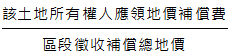
2. 只有鳥能站的地方，不得測量登記～106年1月9日地籍測量實施規則修正發布¶
發布日期: 2017-01-12
法規可能已修正
本文發布（2017-01-12）後，文中引用的 地籍測量實施規則第273條（2023-01-13 修正）有修正，內容可能與現行規定不同，請以全國法規資料庫的現行條文為準。
區分所有建物之面積分為專有部分及共有部分(附帶說明的是，民法稱之為共有部分，公寓大廈管理條例稱之為共用部分)。專有部分包括主建物面積及附屬建物面積。基此，區分所有建物面積包括主建物面積、附屬建物面積及共有部分面積三項。茲分述如下：
• (一) 主建物面積：指建物之室內面積，為區分所有權人實際使用之最重要部分。
• (二) 附屬建物面積：附屬建物登記之變革分四階段說明。
-
第一階段：僅騎樓、陽台、雨遮及屋簷可以登記為附屬建物。早期，附屬建物之登記項目琳瑯滿目，未受限制。內政部於85年6月4日以台內地字第8575210號函文規定，附屬建物除騎樓、陽台、平台、屋簷、雨遮等外，其他如露台、花台、花棚、裝飾牆、栽植槽等不予辦理產權登記。另，依「建物所有權第一次登記法令補充規定」第11點規定，區分所有建物之騎樓，除主管建築機關備查之圖說標示為專有部分外，應以共有部分辦理登記。附帶說明的是，平台即陽台，一樓稱為平台，二樓以上稱為陽台，雨遮設置於窗戶或冷氣孔上方，供遮雨防曬之用。屋簷指斜屋頂或平屋頂突出建物外牆部分，以阻擋雨水注入屋內。
-
第二階段：雨遮及屋簷可以登記，亦可以計價。雨遮及屋簷無法提供民眾生活滯留使用，故對購屋者而言不具實用性，只是買到只能站鳥、不能站人的虛坪。況且雨遮及屋簷等虛坪增加，將使公共設施比例(即共有部分面積/建物總面積)下降，誤導購屋者。
-
第三階段：雨遮及屋簷可以登記，但不可以計價。「預售屋買賣定型化契約應記載及不得記載事項」規定，自100年5月1日起，附屬建物除陽台外，其餘項目不得計入買賣價格。換言之，預售屋之雨遮及屋簷可以登記，但不可以計價。雨遮及屋簷雖不得計價，但建商將其價格灌入總價中，因此房屋整體之平均售價未受影響。況且雨遮及屋簷不得計價僅限於預售案，交屋後之成屋買賣仍可以計價。如此，購屋者仍未享有實益，卻造成市場交易之混亂。
-
第四階段：雨遮及屋簷不可以登記，亦不可以計價。106年1月9日修正發布地籍測量實施規則第273條，自107年1月2日以後申請建造執照之建物，附屬建物僅陽台可以測量登記，雨遮及屋簷不可以測量登記。換言之，107年1月2日以後申請建造執照之新案，雨遮及屋簷不可以登記，且不可以計價。
• (三) 共有部分面積：指區分所有建物專有部分以外之其他部分及不屬於專有部分之附屬建物，而供共 同使用者。坊間俗稱「公共設施」。實務上，公共設施又有「大公」與「小公」之分。前者指區分所有建物之屋頂突出物及地下室法定防空避難室、蓄水池、配電室等全體區分所有權人皆須共同使用的空間。後者指僅各區分所有權人實際使用部份之各層樓梯及電梯等空間。¶
注：本文圖片存放於 ./images/ 目錄下
3. 一個國家，兩種建物面積測繪規定～106年1月9日地籍測量實施規則修正發布¶
發布日期: 2017-01-19
法規可能已修正
本文發布（2017-01-19）後，文中引用的 地籍測量實施規則第273條（2023-01-13 修正）有修正，內容可能與現行規定不同，請以全國法規資料庫的現行條文為準。
現制，建管單位之建築執照面積（包括建造執照平面圖及使用執照竣工平面圖）與地政單位之建物登記面積，兩者之測繪規定不同：
• (一) 建管單位：
-
獨立建物，以其外牆之中心線為界。
-
兩建物，以其共用牆壁之中心線為界。
-
陽台，以其中心線為界。
-
地下層，以其外牆之中心線為界。
• (二) 地政單位：
-
獨立建物，以其外牆之外緣線為界。
-
兩建物，以其共用牆壁之中心線為界。
-
陽台，以其外緣線為界。
-
地下層，以其外牆之中心線為界。
基上，地政單位之建物登記面積大於建管單位之建築執照面積。又，建物銷售面積以登記面積為準，因此建物銷售面積大於建物執照面積。
106年1月9日地籍測量實施規則第273條修正，除刪除雨遮及屋簷辦理附屬建物測量外，地下層測繪邊界由外牆之外緣改為外牆之中心。須注意者，上開修正自107年1月2日以後申請建造執照始適用。
另外，因應地籍測量實施規則第273條有關地下層測繪之新規定，公寓大廈管理條例第56條第3項第4款應配合修正。¶
注：本文圖片存放於 ./images/ 目錄下
4. 實價登錄資料之真實性存疑¶
發布日期: 2017-01-26
法規可能已修正
本文發布（2017-01-26）後，文中引用的 平均地權條例第81條之2（2023-02-08 修正）有修正，內容可能與現行規定不同，請以全國法規資料庫的現行條文為準。
實價申報如在不影響賣方權益下，基於下列動機，常會發生以少報多之不實申報：
• (一) 提高申報價格，以增加向銀行貸款額度。
• (二) 提高申報價格，以減少買方日後出售之房地合一所得稅。
• (三) 提高申報價格，以利於周遭餘屋之銷售。
此外，利用平均地權條例第81條之2之規定，不由地政士或不動產經紀人申報，而由買方自行申報，縱使被查到也不處罰，改正再真實申報即可。況且被處罰也只罰3萬元以上15萬元以下，不痛不癢，不實申報之所獲利益與被處罰金額不成比例。
綜上，從事不動產估價蒐集實例，如以實價登錄資料作為比較標的，應謹慎為之。¶
注：本文圖片存放於 ./images/ 目錄下
5. 老舊建物拆除重建之時機¶
發布日期: 2017-02-09
建物使用一段時間後，通常會發生老舊衰頹而遭到拆除重建，試問拆除重建或土地再開發之時機如何決定？如圖所示，AB代表潛在房地總價(指土地在最有效使用下所規劃興建建物之房地總價)，AC代表實際房地總價(指目前實際建物之房地總價)。
當建物興建完成初期，土地上之建物符合當時之最有效使用，潛在房地總價等於實際房地總價，故無間隙現象。隨著時間之增加，一方面都市逐漸成長與擴張，造成潛在房地總價不斷上升；另一方面，原有建物逐漸老舊，造成實際房地總價不斷下降。因此，潛在房地總價與實際房地總價之間隙產生，並逐漸拉大。
當間隙拉大至足以涵蓋興建新建物之營建成本(假設為[圖片1])，則老舊建物就值得拆除重建。如圖所示，當建物使用至t0時，就值得拆除重建。又，當政府推行容積獎勵或容積移轉時，將使潛在房地總價由AB上移至AD，設(假設為[圖片2]，則老舊建物拆除重建時機提前至t1進行。
[圖片3]
如圖所示，EF代表素地價格(指不考慮建物對土地之影響，單就土地在最有效使用下之地價)。當素地價格等於實際房地總價，如圖中之K點，則老舊建物已無存在價值，應該立即拆除重建。總之，當建物使用至t0時，就「值得」拆除重建；當建物使用至t2時，就「應該」拆除重建。
此外，值得一提的是，從事房地估價時，在K點之前，評估房地價格，即評估實際房地總價AK；在K點之後，評估土地價格，即評估素地價格KF。
文章圖片¶


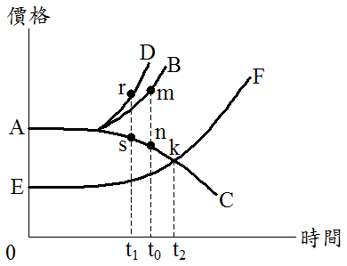
6. 都市發展過程的三種現象¶
發布日期: 2017-02-16
都市發展過程中，都市形成期有都市化現象，都市成熟期有郊區化現象，都市沒落期有仕紳化現象。茲分析如下：
• (一) 都市化現象：所稱都市化，指鄉村人口往都市集中之過程。因工商活動之興起，鄉村人口逐漸往都市移動，而形成都市。
• (二) 郊區化現象：所稱郊區化，指市中心人口向郊區分散之過程。當市中心人口過度集中，造成地價上漲、公共設施不足及居住環境惡化，因此人口逐漸往郊區移動。
• (三) 仕紳化現象：所稱仕紳化，指舊市區從原本聚集低收入者，俟更新重建後，房租及房價上漲，而吸引高收入者之遷入。老舊市區經過都市更新後，起死回生，重現生機，除資本回流外，並吸引高收入者之進住。
[圖片1]
文章圖片¶

7. 停車位之產權登記《一》¶
發布日期: 2017-02-23
停車位分為法定車位、增設車位及獎勵車位三種。所稱法定車位，指依建築相關法規規定，建築物依用途、樓地板面積等指標計算，所必須設置之停車位。增設車位，指建築物除法定車位以外，所增加設置之停車位。獎勵車位，指政府為解決停車位不足，以增加容積率鼓勵建物增設停車位。
法定車位及增設車位，免計入容積率。獎勵車位，除免計入容積率外，另給予增加容積率之鼓勵。
現行停車位之產權登記如下：
• (一) 法定車位不得以主建物登載，而應於共有部分登載。因此，無法單獨取得所有權狀(即無獨立權狀之車位)，故不可以賣給區分所有權人以外的人(即不可外賣)。
• (二) 增設車位或獎勵車位，如與法定車位明顯區隔(不同樓層或同一樓層經隔間)，且經戶政機關編列有所在地址證明，並由全體起造人協議認定非屬共同使用性質，得單獨編列建號，以主建物記載，取得所有權狀(即有獨立權狀之車位)，就可以賣給區分所有權人以外的人(即可以外賣)
(待續…)
好書逗相報
我的「土地法規」小法典(第六版)於今年2月新鮮問市。本次改版，除更新法規及添加新試題外，最值得推薦的是，司法院大法官解釋(不動產部份)逐號析論，坊間難得一見。該書由元照出版，元照電話(02)23756688。¶
注：本文圖片存放於 ./images/ 目錄下
8. 停車位之產權登記《二》¶
發布日期: 2017-03-02
• (三) 停車位產權採分別共有(即持份共有)方式持有，故須另訂分管契約加以特定，糾紛常起。內政部乃於民國85年9月7日以台內地字第8580947號函規定，停車位得於建物登記簿編號登記，停車位產權始走向特定化。
• (四) 有獨立權狀之車位採分別共有(即持份共有)方式持有，因此出售停車位時，依土地法第34條之1第4項規定，其他共有人有優先購買權，造成出售車位之困擾。內政部乃於95年1月17日以內授中辦地字第0950724925號函規定，地下室停車位連同所屬基地應有部分一併移轉時，如該停車位均登記有建物持分、獨立權狀及特定位置可依編號單獨進出，權利人並得自由使用、收益及處分者，他共有人無優先購買權。
• (五) 一般而言，有獨立權狀之車位有土地持分。然無獨立權狀之車位，早期有的有土地持分，有的無土地持分。晚近，無獨立權狀之車位大都有土地持分，且一個車位固定為一萬分之一、一萬分之二或二萬分之一等。
• (六) 停車位分為有獨立權狀車位與無獨立權狀車位二種。前者可以外賣，後者不可以外賣。增設車位及獎勵車位如符合規定條件，可以登記為有獨立權狀車位；法定車位不可以登記為有獨立權狀車位。然部分投機建商為使大樓過剩的停車位可以外賣，規劃有獨立建號之一小間建物(如儲藏室、管理室等)，將眾多車位掛在此一建物上，而成為有獨立權狀車位，而得以外賣。¶
注：本文圖片存放於 ./images/ 目錄下
9. 享受考試¶
發布日期: 2017-03-09
今年(2017年)澳網是由費德勒(Federer)與納達爾(Nadal)二位前球王爭冠。費德勒已經35歲，納達爾也已經30歲，二人最近都受傷痛所苦，好一陣子未參加比賽。參加今年的澳網，只是為了「享受比賽」。
費德勒的單手反拍，納達爾的上旋回球，頂尖對決，高潮迭起，直到第五盤(最後一盤)才分出勝負。但勝負已經不重要了，因為他們都在「享受比賽」。
參加考試，就如同參加比賽。準備考試過程，有喜悅也有挫折，有高潮也有低潮。但無論如何，都應該樂觀的面對，以「享受考試」的心情準備考試。¶
注：本文圖片存放於 ./images/ 目錄下
10. 土地登記規則新修正內容¶
發布日期: 2017-03-16
法規可能已修正
本文發布（2017-03-16）後，文中引用的 土地登記規則第29條（2018-11-16 修正）有修正，內容可能與現行規定不同，請以全國法規資料庫的現行條文為準。
土地登記規則於106年2月14日修正發布，共修正四個條文。修正內容有二：
• (一) 刪除地目等則登記：106年1月1日正式廢除地目等則制度，爰修正土地登記規則第29條及第85條，將有關地目等則規定予以刪除。
• (二) 暫編建號編造建物登記簿均於標示部其他登記事項欄辦理登記：
-
土地登記規則第117條之預為抵押權登記，須暫編建號，編造建物登記簿，舊條文於「他項權利部」辦理登記，現修正於「標示部其他登記事項欄」辦理登記。
-
土地登記規則第139條之未登記建物辦理查封登記，須暫編建號，編造建物登記簿，舊條文於「所有權部」辦理登記，現修正於「標示部其他登記事項欄」辦理登記。
附帶一提，我的土地登記課程於106年3月19日(星期日)早上9:30開課。我的上課方式有別於其他老師，請同學好好「享受上課」。¶
注：本文圖片存放於 ./images/ 目錄下
11. 不動產契約書¶
發布日期: 2017-03-23
法規可能已修正
本文發布（2017-03-23）後，文中引用的 平均地權條例第47條（2021-01-27 修正）、所得稅法第14條之5（2021-04-28 修正）有修正，內容可能與現行規定不同，請以全國法規資料庫的現行條文為準。
不動產契約書有公契與私契之分。茲分述如下：
• (一) 公契：即公定契約書，契約書格式及內容由政府製作。依據民法第758條規定：「不動產物權，依法律行為而取得、設定、喪失及變更者，非經登記，不生效力。前項行為，應以書面為之。」此書面，如為雙方合意，即契約書。所稱契約書，指公契。
公契之性質屬於物權契約，作為課徵賦稅及土地登記之用。因此，公契所記載之買賣價格一般為課稅價格。
例如：
-
土地登記規則第14條規定：「登記機關應備下列登記書表簿冊圖狀：一、登記申請書。二、登記清冊。三、契約書。......」所稱契約書，指公契。
-
平均地權條例第47條規定：「土地所有權移轉或設定典權時，權利人及義務人應於訂定契約之日起三十日內，檢同契約及有關文件，共同申請土地所有權移轉或設定典權登記，並共同申報其土地移轉現值。......」所稱契約，指公契。
• (二) 私契：雙方合意所簽訂之契約書。此契約書無既定格式及內容。
私契之性質屬於債權契約，作為請求給付之用。因此，私契所記載之買賣價格一定為實際買賣價格。
例如：
-
民法第166條之1規定：「契約以負擔不動產物權之移轉、設定或變更之義務為標的者，應由公證人作成公證書。......」所稱契約，指私契。
-
所得稅法第14條之5規定：「個人有前條之交易所得或損失，......，檢附契約書影本及其他有關文件，向該管稽徵機關辦理申報；......」所稱契約書，指私契。
總之，不動產買賣簽訂二本契約書，先簽訂私契，再簽訂公契。二本契約書之用途不同，前者在履約契約之用，後者在辦理登記之用。
範題：甲向乙購買一筆土地，私契記載買賣總價1,000萬元，公契記載買賣總價600萬元。雙方於私契約定，甲於簽約先支付600萬元，尾款400萬元於辦竣登記後支付。日後，俟辦竣登記，乙請求給付尾款，甲主張公契明文記載買賣總價600萬元，故甲拒絕給付餘款400萬元，請問甲主張是否有理？
【解答】甲主張不合理。乙得依據「私契」訴請法院請求給付。¶
注：本文圖片存放於 ./images/ 目錄下
12. 不動產市場發生供不應求或供過於求對建物折舊及耐用年數有何影響？¶
發布日期: 2017-03-30
• (一) 對建物折舊之影響：所稱折舊，指建物因時間經過，所造成之價值減損。折舊分為物理性折舊（指實體損壞）、功能性折舊（指功能性退化）及經濟性折舊（指外部性退化）三種。
-
當不動產市場發生供不應求時，房地價格上漲，故建物未發生折舊。
-
當不動產市場發生供過於求時，房地價格下跌，故建物發生折舊。又，市場發生供過於求是外部性退化，故所發生之折舊屬於經濟性折舊。
• (二) 對耐用年數之影響：耐用年數有物理耐用年數與經濟耐用年數之分。前者指建物結構損壞而不堪使用之年數，後者指建物效益衰退而不值得使用之年數。
- 當不動產市場發生供不應求時，現存老舊建物就值得更新重建，故會縮短經濟耐用年數，惟對物理耐用年數無影響。
2. 當不動產市場發生供過於求時，現存老舊建物就不值得更新重建，故會延長經濟耐用年數，惟對物理耐用年數無影響。¶
注：本文圖片存放於 ./images/ 目錄下
13. 房地市場價格分析(一)¶
發布日期: 2017-04-13
所稱房地市場價格，指建物及其基地之市價，亦即房地結合體之市價。本文所稱之價格，皆指總價而言。茲就原料與產品二方面分析說明：
• (一) 就原料而論：
-
素地價格：指不考慮房地產品對土地價格之影響，而單就土地在最有效使用下之價格。土地有增值，而無折舊。
-
建物成本價格：指不考慮房地產品對建物價格之影響，而單就建物在時間經歷下之價格。建物有折舊，而無增值。
-
房地市場價格之構成：素地價格與建物成本之和，未必等於房地市場價格。亦即： 素地價格+建物成本價格≠房地市場價格茲分下列二種情形：(1)素地價格+建物成本價格＜房地市場價格：表示土地與建物二種原料結合而成為產品時，存在「利潤」。換言之，產品價格大於原料價格。通俗的說，麵包價格大於麵粉價格。(2)素地價格+建物成本價格＞房地市場價格：表示土地與建物二種原料結合而成為產品時，存在「虧損」。換言之，產品價格小於原料價格。通俗的說，麵包價格小於麵粉價格。
• (二) 就產品而論：
房地市場價格可以拆分為土地價格與建物價格二部份。前者稱為土地貢獻價值；後者稱為建物貢獻價值。亦即：房地市場價格=土地貢獻價值+建物貢獻價值
拆分之方法有三：
-
土地貢獻說：將利潤或虧損歸屬於土地之貢獻。
-
建物貢獻說：將利潤或虧損歸屬於建物之貢獻。
-
聯合貢獻說：將利潤或虧損歸屬於土地及建物二者共同之貢獻。
[例題]
房地市場價格1,000萬元，素地價格700萬元，建物成本價格200萬元。1,000－700－200=100萬元(利潤)
-
土地貢獻說：①土地貢獻價值：700+100=800萬元②建物貢獻價值：200萬元
-
建物貢獻說：①土地貢獻價值：700萬元②建物貢獻價值：200+100=300萬元
-
聯合貢獻說：①土地貢獻價值：[圖片1]②建物貢獻價值：[圖片2]
房地市場價格1,000萬元，素地價格900萬元，建物成本價格200萬元。1,000－900－200= -100萬元(虧損)
-
土地貢獻說：①土地貢獻價值：900－100=800萬元②建物貢獻價值：200萬元
-
建物貢獻說：①土地貢獻價值：900萬元②建物貢獻價值：200－100=100萬元
-
聯合貢獻說：①土地貢獻價值：[圖片3]②建物貢獻價值：[圖片4]
待續...
文章圖片¶


14. 房地市場價格分析(二)¶
發布日期: 2017-04-20
接續上篇...
• (三) 圖形分析：
[圖片1]
• A. B代表房地市場價格。CD代表土地貢獻價值。EF代表素地價格。MN代表建物成本價格。
-
房地市場價格AB呈遞增現象，但邊際價格呈遞減趨勢。所稱邊際價格，即△P／△t，△t指時間變動量，△P指價格變動量。
-
房地市場價格AB與土地貢獻價值CD之垂直間距，等於建物貢獻價值。由於土地存在增值，建物存在折舊，因此AB與CD之垂直間距逐漸縮小。
-
素地價格EF呈遞增現象，且邊際價格(即△P／△t )亦呈遞增趨勢。
-
建物成本價格MN呈遞減現象，此乃折舊所造成。
-
在t1之前，產品價格大於原料價格，即原料製造成產品存有利潤。在t1之後，產品價格小於原料價格，即原料製造成產品存有虧損。因此，在t1之後，建物拆除重建可以考慮進行。
-
在t2之後，素地價格大於房地市場價格，表示建物已無存在價值。因此，在t2之後建物拆除重建必須儘速進行。
文章圖片¶

15. 最新法律修正，先睹為快¶
發布日期: 2017-04-27
法規可能已修正
本文發布（2017-04-27）後，文中引用的 平均地權條例第14條（2017-05-10 修正）、遺產及贈與稅法第58條之2（2017-05-10 修正）有修正，內容可能與現行規定不同，請以全國法規資料庫的現行條文為準。
• (一) 修正平均地權條例第十四條及第十七條條文 (106年4月21日立法院三讀通過)
第十四條規定地價後，每二年重新規定地價一次。但必要時得延長之。重新規定地價者，亦同。
第十七條已規定地價之土地，應按申報地價，依法徵收地價稅。應納地價稅額因公告地價調整致納稅義務人繳納困難者，得於規定繳納期間內，向稅捐稽徵機關申請延期或分期繳納，延期繳納期間不得逾六個月，分期繳納期間不得逾一年。前項延期或分期繳納辦法，直轄市及縣（市）政府得依社會經濟情況及實際需要定之。
• (二) 增訂遺產及贈與稅法第五十八條之二條文；並修正第十二條之一、第十三條及第十九條條文(106年4月25日立法院三讀通過)
第十二條之一本法規定之下列各項金額，每遇消費者物價指數較上次調整之指數累計上漲達百分之十以上時，自次年起按上漲程度調整之。調整金額以萬元為單位，未達萬元者按千元數四捨五入：一、免稅額。二、課稅級距金額。三、被繼承人日常生活必需之器具及用具、職業上之工具，不計入遺產總額之金額。四、被繼承人之配偶、直系血親卑親屬、父母、兄弟姊妹、祖父母扣除額、喪葬費扣除額及身心障礙特別扣除額。財政部於每年十二月底前，應依據前項規定，計算次年發生之繼承或贈與案件所應適用之各項金額後公告之。所稱消費者物價指數，指行政院主計總處公布，自前一年十一月起至該年十月底為止十二個月平均消費者物價指數。
第十三條遺產稅按被繼承人死亡時，依本法規定計算之遺產總額，減除第十七條、第十七條之一規定之各項扣除額及第十八條規定之免稅額後之課稅遺產淨額，依下列稅率課徵之：一、五千萬元以下者，課徵百分之十。二、超過五千萬元至一億元者，課徵五百萬元，加超過五千萬元部分之百分之十五。三、超過一億元者，課徵一千二百五十萬元，加超過一億元部分之百分之二十。
第十九條贈與稅按贈與人每年贈與總額，減除第二十一條規定之扣除額及第二十二條規定之免稅額後之課稅贈與淨額，依下列稅率課徵之：一、二千五百萬元以下者，課徵百分之十。二、超過二千五百萬元至五千萬元者，課徵二百五十萬元，加超過二千五百萬元部分之百分之十五。三、超過五千萬元者，課徵六百二十五萬元，加超過五千萬元部分之百分之二十。一年內有二次以上贈與者，應合併計算其贈與額，依前項規定計算稅額，減除其已繳之贈與稅額後，為當次之贈與稅額。
第五十八條之二本法中華民國一百零六年四月二十五日修正之條文施行後，依第十三條及第十九條第一項規定稅率課徵之遺產稅及贈與稅，屬稅率超過百分之十至百分之二十以內之稅課收入，撥入依長期照顧服務法設置之特種基金，用於長期照顧服務支出，不適用財政收支劃分法之規定。
• (三) 上述修正內容，將於本班總複習時詳細講解。¶
注：本文圖片存放於 ./images/ 目錄下
16. 土地登記模擬考題(一)¶
發布日期: 2017-05-04
申請建物所有權第一次登記，若建物與基地非屬同一人所有者，在何種情形免附使用基地之證明文件？
【解答】
• (一) 實施建築管理前建造之建物：有下列情形之一者，免附基地所有權人同意
使用之證明文件：
-
申請人為地上權人或典權人。
-
因法院拍賣移轉取得建物者。
-
日據時期已登記之建物。
-
占用基地經法院判決確定有使用權利者。
-
租用他人土地建築房屋且提出土地使用證明者。
• (二) 實施建築管理後建造之建物：實施建築管理後，申請建物所有權第一次登記，應檢附使用執照。爰取得使用執照前，須先取得建造執照。申請建造執照時，如申請人與基地所有權人非同一人，應提出使用基地之證明文件。此一情形，業經建管機關審核通過，登記機關不必重複審查。因此，實施建築管理後，若申請人與基地所有權人非同一人，如已提出使用執照，就免附使用基地之證明文件。¶
注：本文圖片存放於 ./images/ 目錄下
17. 土地登記模擬考題(二)¶
發布日期: 2017-05-11
何謂破產登記？土地經破產登記後之新登記，登記機關如何處理？又，破產管理人就破產財團所屬土地申請權利變更登記時，應提出哪些文件？
【解答】
• (一) 破產登記之意義：債務人不能清償其債務，為兼顧債權人與債務人之利益，就債權人或債務人之聲請，或依職權宣告債務人破產。法院為破產宣告時，就破產人或破產財團之有關登記，應即通知該登記機關，囑託為破產之登記。破產人因破產之宣告，對於應屬破產財團之財產，喪失其管理及處分權。
• (二) 土地經破產登記後之新登記：土地經辦理破產登記後，未為塗銷前，登記機關應停止與其權利有關之新登記。但有下列情形之一為登記者，不在此限：
-
徵收、區段徵收或照價收買。
-
公同共有繼承。
-
其他無礙禁止處分之登記。
• (三) 破產管理人處分破產財團所屬之土地：破產管理人就破產財團所屬土地申請權利變更登記時，除依土地登記規則第三十四條規定辦理外，應提出破產管理人、監查人之資格證明文件與監查人之同意書或法院之證明文件。¶
注：本文圖片存放於 ./images/ 目錄下
18. 所有權住宅、地上權住宅及使用權住宅(一)¶
發布日期: 2017-05-18
現行，建設公司出售之住宅種類大致分為所有權住宅、地上權住宅及使用權住宅等三種。
• (一) 所有權住宅：建設公司購買土地興建房屋出售。購屋者向建設公司購買房地後，對土地擁有所有權，對建物擁有所有權。一般坊間之住宅大都屬於此類。
• (二) 地上權住宅：建設公司向政府標得土地之地上權後，興建房屋出售。購屋者向建設公司購買房地後，對土地僅擁有地上權而無所有權，對建物擁有所有權。
• (三) 使用權住宅：建設公司向政府標得土地之地上權，但政府限制得標者地上權移轉或地上權分割移轉。建設公司興建房屋後，僅能出售房地之使用權，土地之地上權及建物之所有權仍屬建設公司所有。購屋者向建設公司購買房地後，對土地及建物僅擁有使用權。
待續...¶
注：本文圖片存放於 ./images/ 目錄下
19. 所有權住宅、地上權住宅及使用權住宅(二)¶
發布日期: 2017-05-25
接續上篇...
茲以購屋者立場就所有權住宅、地上權住宅及使用權住宅三者比較如下：
| 種類
項目 | 所有權住宅 | 地上權住宅 | 使用權住宅 |
| --- | --- | --- | --- |
| 種類 項目 | 所有權住宅 | 地上權住宅 | 使用權住宅 |
| 產權型態 | 土地：所有權建物：所有權 | 土地：地上權建物：所有權 | 土地：使用權建物：使用權 |
| 使用期限 | 永久 | 有一定使用期限（如50年或70年） | 有一定使用期限（如50年或70年） |
| 市場價格 | 一般住宅行情 | 售價較低，一般為所有權住宅之六成或七成左右。 | 售價較低，一般為所有權住宅之五成或六成左右。 |
| 銀行貸款 | 貸款較高，一般為買賣價格之七成左右。 | 貸款較低，一般為買賣價格之五成左右。 | 貸款困難，由建設公司出面貸款，再轉給購屋者。 |
| 持有稅 | 地價稅：可適用自用住宅用地之地價稅。 房屋稅：
可適用自住房屋稅。 | 地價稅：無須繳納地價稅，
但須按申報地價之3%~5%繳納地租。
繳納地租比繳納地價稅為重。 房屋稅：
可適用自住房屋稅。 | 地價稅：無須繳納地價稅，
但須按申報地價之3%~5%繳納地租。
繳納地租比繳納地價稅為重。 房屋稅：
可適用自住房屋稅。 |
| 移轉稅 | 土地增值稅：賣方繳納土地增值稅。 契稅：
買方須繳納契稅。 房地合一所得稅：
賣方須繳納房地合一所得稅。 | 土地增值稅：地上權移轉，無須繳納土地增值稅。
契稅：買方須繳納契稅。 房地合一所得稅：
賣方須繳納房地合一所得稅。 | 土地增值稅：土地使用權移轉，無須繳納土地增值稅。
契稅：建物使用權移轉，無須繳納契稅。
房地合一所得稅：賣方須繳納房地合一所得稅。 |
| 流動性 | 次級市場流通性佳 | 次級市場流通性差 | 次級市場流通性差 |
| 增值性 | 未來增值性佳 | 地上權期限屆至時，地上權住宅之價格為零。 | 地上權期限屆至時，使用權住宅之價格為零。 |
| 法律關係 | 建設公司將所有權住宅出售於購屋者之後，
購屋者即成為房地所有權人。 | 建設公司將地上權住宅出售於購屋者之後，
地上權關係改變為購屋者與政府之間。換言之，
建設公司之法律關係消滅。 | 建設公司將使用權住宅出售於購屋者之後，
地上權關係仍存在於建設公司與政府之間。換言之，
建設公司與政府之間有地上權之法律關係，
購屋者與建設公司之間有使用權之法律關係。 |
| 代表作品 | 如帝寶(台北市)是所有權住宅之代表。 | 寶成建設：河畔皇家(台北市) 信義計畫區：
台北花園(台北市) | 日勝生建設：京站(台北市) 華固建設：
新天地(台北市) |
注：本文圖片存放於 ./images/ 目錄下
20. 國土計畫法之實施對不動產市場之影響¶
發布日期: 2017-06-01
國土計畫法將全國土地分為國土保育地區、海洋資源地區、農業發展地區及城鄉發展地區等四種，土地使用管制較以往更為嚴格。又辦理用地變更，申請使用許可，應向中央主管機關繳交「國土保育費」，另向直轄市、縣(市)主管機關繳交「影響費」，土地變更之回饋較以往更多。
茲運用住宅存量流量模型(stock-flow model)分析國土計畫法之實施對不動產市場之影響：
• (一) 住宅存量流量模型：如圖一所示，首先，在第一象限，假設短期住宅供給量固定（ST），由住宅空間需求決定租金水準（R）。其次，在第二象限，將租金水準以資本還原率（I）還原為住宅價格（P）。接著，在第三象限，由住宅價格與新建住宅成本（成本收入）決定新建住宅數量（QNEW）。最後，在第四象限，由新建住宅數量，減去原住宅存量之折舊數量（即d×ST，d代表折舊率），即得新增空間存量（△ST）。如△ST=0，則第一象限之空間存量不變；△ST>0，則第一象限之空間存量增加；△ST<0，則第一象限之空間存量減少。假定△ST=0，則連接ST、R、P與QNEW之虛線，形成均衡狀態。
[圖片1]
• (二) 國土計畫法之影響：實施國土計畫法，土地使用管制較以往更為嚴格，土地變更負擔較以往更為沉重，因此新建住宅成本提高，第三象限的QNEW向左平行移動至Q’NEW，如圖二所示。原有均衡狀態（速接R、P、Q與ST之虛線）改變為新的均衡狀態（連接R’、P’、Q’與ST’之虛線）。因此，市場租金由R上漲為R’，住宅價格由P上漲為P’，住宅新建量由Q減少為Q’，空間存量由ST減少為ST’。
[圖片2]
文章圖片¶


21. 地政士考前必讀¶
發布日期: 2017-06-08
稅捐稽徵法第26條規定之稅捐延期繳納或分期繳納，與平均地權條例第17條規定之地價稅額延期繳納或分期繳納，有何不同？二者競合時，如何適用？
【解答】
• (一) 稅捐稽徵法第26條第1項(以下簡稱稅捐稽徵)：納稅義務人因天災、事變、不可抗力之事由或為經濟弱勢者，不能於法定期間內繳清稅捐者，得於規定納稅期間內，向稅捐稽徵機關申請延期或分期繳納，其延期或分期繳納之期間，不得逾三年。
• (二) 平均地權條例第17條第2項(以下簡稱平均地權)：應納地價稅額因公告地價調整致納稅義務人繳納困難者，得於規定繳納期間內，向稅捐稽徵機關申請延期或分期繳納，延期繳納期間不得逾六個月，分期繳納期間不得逾一年。
• (三) 兩者比較：
-
適用對象：(1)稅捐稽徵：適用於一切法定之國及縣(市)之稅捐。但不包括關稅及礦稅。(2)平均地權：僅適用於地價稅。
-
發生原因：(1)稅捐稽徵：因天災、事變、不可抗力之事由或為經濟弱勢者。(2)平均地權：因公告地價調整致繳納困難者。
-
延期或分期之繳納期間：(1)稅捐稽徵：延期或分期之繳納期間不得逾三年。(2)平均地權：延期繳納期間不得逾六個月，分期繳納期間不得逾一年。
• (四) 兩者競合：依稅捐稽徵法第1條規定：「稅捐之稽徵，依本法之規定；本法未規定者，依其他有關法律之規定。」準此，二者競合時，優先適用稅捐稽徵法第26條。換言之，稅捐稽徵法第26條未規定者，始適用平均地權條例第17條。¶
注：本文圖片存放於 ./images/ 目錄下
22. 今年地政士試題總評¶
發布日期: 2017-06-13
• (一) 土地法規：
-
本次試題較以往靈活，以簡易實例題為主。所稱簡易實例題，指將一條法律規定，以實例方式命題。以土地法第17條外國人取得土地種類之限制為例：某甲為台裔美國人，不具我國國籍，則某甲為外國人；其父某乙死亡，遺留一筆某縣非都市山坡地保育區林業用地，則該筆土地屬於土地法第17條之林地；因此，某甲應於辦理繼承登記完畢之日起三年內出售與本國人，不可永世持有。
-
簡易實例題之答題技巧，先寫出法條規定，再將題旨照抄後，套入法條，得出答案。請參考班內解答。
-
與往例相同，地政士法一定出一題。由於地政士法內容最少，故這題最容易掌握。
• (二) 土地登記實務：
-
土地登記實務這科主要從「土地登記規則」及「地籍測量實施規則」命題。本次考試亦不例外。
-
今年2月14日土地登記規則修正第29、85、117、139條條文，今年就考第139條。由此可知，最新時事應特別留意。
-
區分所有建物之共有部分，測量規定於地籍測量實施規則第283條，登記規定於土地登記規則第81條，二條內容大同小異。由此可知，準備考試時，登記與測量二邊應一起準備，相互對照，這樣可以省下很多時間及精力。
• (三) 土地稅法規：
-
遺產及贈與稅法於今年5月10日修正，6月11日馬上考出來，還好我考前總複習放在第一題加以強調。
-
工程受益費在以往只考過一次(即104年地政士考試)，這次只隔一年又跑出來。由此可知，準備考試需按部就班，不可心存僥倖。還好我就是按部就班上課，因此我的學生的實力會較一般考生紮實。
• (四) 信託法概要：
每年信託法一定出一題。由於信託法內容最少，故這題最容易拿分。今年考信託法第6條，我在考前總複習及考猜都抓這一題，果然出現，純屬巧合。¶
注：本文圖片存放於 ./images/ 目錄下
23. 非農民不得興建農舍，但可以購買農舍(一)¶
發布日期: 2017-06-15
最近，宜蘭縣政府拆除礁溪鄉一棟三層樓高的違規農舍。該農舍之土地面積約0.15公頃，未達0.25公頃，依規定不得興建農舍，被宜蘭縣政府列入重大違規，不得補發農舍建照，故予以拆除。
茲依農業發展條例第18條及農業用地興建農舍辦法說明如下：
• (一) 農業用地興建農舍之條件：
-
具農民身分：農民之認定，由農民於申請興建農舍時，檢附農業生產相關佐證資料，經直轄市、縣（市）主管機關會同專家、學者會勘後認定之。但屬農民健康保險被保險人或全民健康保險第三類被保險人者，不在此限。
-
申請興建農舍之申請人應為農民，且其資格應符合下列條件，並經直轄市、縣（市）主管機關核定：(1)年滿二十歲或未滿二十歲已結婚者。(2)申請人之戶籍所在地及其農業用地，須在同一直轄市、縣（市）內，且其土地取得及戶籍登記均應滿二年者。但參加興建集村農舍建築物坐落之農業用地，不受土地取得應滿二年之限制。(3)申請興建農舍之該筆農業用地面積不得小於零點二五公頃。但參加興建集村農舍及於離島地區興建農舍者，不在此限。(4)申請人無自用農舍者。申請人已領有個別農舍或集村農舍建造執照者，視為已有自用農舍。但該建造執照屬尚未開工且已撤銷或原申請案件重新申請者，不在此限。(5)申請人為該農業用地之所有權人，且該農業用地應確供農業使用及屬未經申請興建農舍者；該農舍之興建並不得影響農業生產環境及農村發展。(6)興建農舍起造人應為該農舍坐落土地之所有權人。
-
興建農舍應符合下列規定：(1)農舍興建圍牆，以不超過農舍用地面積範圍為限。(2)地下層每層興建面積，不得超過農舍建築面積，其面積應列入總樓地板面積計算。但依都市計畫法令或建築技術規則規定設置之法定停車空間，得免列入總樓地板面積計算。(3)申請興建農舍之農業用地，其農舍用地面積不得超過該農業用地面積百分之十，扣除農舍用地面積後，供農業生產使用部分之農業經營用地應為完整區塊，且其面積不得低於該農業用地面積百分之九十。
綜上，民國104年9月4日修正農業用地興建農舍辦法，加嚴認定農民身分，申請興建農舍數量因而驟減。
待續...¶
注：本文圖片存放於 ./images/ 目錄下
24. 非農民不得興建農舍，但可以購買農舍(二)¶
發布日期: 2017-06-22
接續上一篇...
• (二) 農舍移轉之限制：
-
農業用地應確供農業使用；其在自有農業用地興建農舍滿五年始得移轉。但因繼承或法院拍賣而移轉者，不在此限。
-
農舍應與其坐落用地併同移轉或併同設定抵押權
由此可知，非農民可以購買農舍，農舍買賣市場仍相當熱絡。
• (三) 違規農舍之處罰：興建農舍之農業用地，僅十分之一可蓋建物，其餘十分之九必須實際務農。準此，違規農舍最常見情形有增建建物、填土造景、鋪設水泥等，而作豪宅或土雞城之用。倘有上開違規農舍，直轄市、縣(市)政府應依區域計畫法第21條及第22條處理。亦即：
-
違反非都市土地管制使用土地者，由該管直轄市、縣(市)政府處新台幣六萬元以上三十萬元以下罰鍰，並得限期令其變更使用、停止使用或拆除其地上物恢復原狀。
-
前項情形經限期變更使用、停止使用或拆除地上物恢復原狀而不遵從者，得按次處罰，並停止供水、供電、封閉、強制拆除或採取其他恢復原狀之措施，其費用由土地或地上物所有人、使用人或管理人負擔。
3. 違反規定不依限變更土地使用或拆除建築物恢復土地原狀者，除依行政執行法辦理外，並得處六個月以下有期徒刑或拘役。¶
注：本文圖片存放於 ./images/ 目錄下
25. 登記錯誤、遺漏之更正與塗銷登記差異¶
發布日期: 2017-06-27
各位同學好
剛好有幾位同學問到登記錯誤、遺漏之更正與塗銷登記差異，故本次專欄針對此問題進行觀念釐清：
首先，相關法條如下：
土69：登記人員或利害關係人，於登記完畢後，發見登記錯誤或遺漏時，非以書面聲請該管上級機關查明核准後，不得更正。須不妨害原登記之同一性，亦即更正登記後，登記事項所示法律關係應與原登記者相同，不得變更。但登記錯誤或遺漏，純屬登記人員記載時之疏忽，並有原始登記原因證明文件可稽者，由登記機關逕行更正之。
土登144：有下列情形之一者，於第三人取得該土地權利之新登記前，登記機關得於報經直轄市或縣 (市) 地政機關查明核准後塗銷之：
-
登記證明文件經該主管機關認定係屬偽造。
-
純屬登記機關之疏失而錯誤之登記。
其次，請參考內政部98年7月24日內授中辦地字第0980047281號函：塗銷登記係指已登記之土地權利，因法定或約定原因消滅，向登記機關申請將該權利予以塗銷，或由行政機關依職權行使撤銷權辦理之塗銷，該塗銷係屬使其效力完全消滅之登記，如經查明原准予登記之處分純係登記機關疏失而為之違法行政處分，於該登記之土地權利未經第三人取得前，自得本職權依土地登記規則第144條第1項規定辦理塗銷登記。至同規則第13條規定之登記錯誤，係指准予登記之行政處分並無違誤，僅登記機關辦理登記時未依登記原因證明文件所載內容登記而生登記事項與之不符情事，登記機關依職權或經利害關係人申請而辦理更正該不符部分之登記內容者，二者之法律關係尚屬有別。
因此，可從錯誤嚴重程度來分類釐清：
-
應登記但筆誤而登記完畢者，於第三人取得登記完畢前，逕行更正登記。主要考量登記人員登載難免會有疏忽或筆誤，假設有原始的登記原因證明文件可查並經確認就是筆誤而已，為達到行政簡便便民，提昇行政效率，故例外由登記機關逕行更正。
-
應登記但內容有誤未發現而登記完畢者，於第三人取得登記完畢前，核准更正登記。原則上，更正登記皆須經過核准。例如：因地籍圖重測面積計算錯誤，致地籍圖重測結果清冊所載重測面積有誤，進而登記面積錯誤。此非筆誤，須經報上級地政機關核准後更正。
-
不應登記卻登記完畢者，於第三人取得登記完畢前，核准塗銷登記。依土登規則本就不應登記情形，而是因為登記機關疏失而導致錯誤的登載，因該錯誤並非私權有所爭執，民事法院亦無從受理審判，於第三人取得該土地登記權利前，自應由登記機關依職權撤銷原處分，辦理塗銷登記。亦即屬於原不應出現的登記，卻登載上去，故屬於違法行政處分，而將其塗銷。按違法之行政處分除係無效或瑕疵已補正者外，其餘均屬得撤銷，基於依法行政原則，並兼顧信賴保護原則，登記機關或其上級地政機關自得於第三人取得該土地權利之新登記前，依職權撤銷原准予登記之處分例如：登記應備文件應檢附義務人印鑑證明，倘若當時未檢附卻予以登記，此時屬不准予登記案件，但屬登記機關疏失而予以登記，故將其塗銷。
4. 上述情形，於第三人取得登記完畢後，因無法回復原狀，故以請求損害賠償為主。¶
注：本文圖片存放於 ./images/ 目錄下
26. 106高普考考前必讀(一)¶
發布日期: 2017-06-27
◎需用土地人因興辦土地徵收條例第3條規定之事業，穿越私有土地之上空或地下，致逾越所有權人社會責任所應忍受範圍，形成個人之特別犧牲，而不依徵收規定向主管機關申請徵收地上權者，土地所有權人得否請求需用土地人向主管機關申請徵收地上權？
【解答】
土地徵收條例第57條第1項規定，需用土地人因興辦第3條規定之事業，需穿越私有土地之上空或地下，得就需用之空間範圍協議取得地上權，協議不成時，準用徵收規定取得地上權。但應擇其損害最少之處所及方法為之。又，同法條第2項規定，前項土地因事業之興辦，致不能為相當之使用時，土地所有權人得自施工之日起至完工後一年內，請求需用土地人徵收土地所有權，需用土地人不得拒絕。
前揭土地徵收條例第57條第2項雖賦予土地所有權人請求徵收之權，然該條項係就公路等設施穿越土地上空或地下致該土地不能為相當使用所設。倘土地僅有價值減損，但未達於不能為相當使用之程度，則無該條項之適用。且土地所有權人依該條項規定得請求徵收者，係土地所有權，而非地上權。故於土地遭公路等設施穿越但尚未達於不能為相當使用之程度者，其所有權人尚無從依該條項請求徵收地上權。又該條第1項雖規定需用土地人得就需用之空間範圍，以協議方式或準用徵收之規定取得地上權，但並未規定土地所有權人得主動請求需用土地人向主管機關申請徵收地上權（司法院釋字第747號解釋理由書）。
爰此，司法院釋字第747號之解釋重點如下：
憲法上財產權保障之範圍，不限於人民對財產之所有權遭國家剝奪之情形。國家機關依法行使公權力致人民之財產遭受損失（諸如所有權喪失、價值或使用效益減損等），若逾其社會責任所應忍受之範圍，形成個人之特別犧牲者，國家應予以合理補償，方符憲法第15條規定人民財產權應予保障之意旨（司法院釋字第440號解釋參照）。國家如徵收土地所有權，人民自得請求合理補償因喪失所有權所遭受之損失；如徵收地上權，人民亦得請求合理補償所減損之經濟利益。
按徵收原則上固由需用土地人向主管機關申請，然國家因公益必要所興辦事業之設施如已實際穿越私人土地之上空或地下，致逾越所有權人社會責任所應忍受範圍，形成個人之特別犧牲，卻未予補償，屬對人民財產權之既成侵害，自應賦予人民主動請求徵收以獲補償之權利，以實現憲法第15條保障人民財產權之意旨。
需用土地人因興辦土地徵收條例第3條規定之事業，穿越私有土地之上空或地下，致逾越所有權人社會責任所應忍受範圍，形成個人之特別犧牲，而不依徵收規定向主管機關申請徵收地上權者，土地所有權人得請求需用土地人向主管機關申請徵收地上權。
土地徵收條例第11條及第57條第1項，未就土地所有權人得請求需用土地人向主管機關申請徵收地上權有所規定，與上開意旨不符。有關機關應自本解釋公布之日起一年內，基於本解釋意旨，修正土地徵收條例妥為規定。逾期未完成修法，土地所有權人得依本解釋意旨，請求需用土地人向主管機關申請徵收地上權。
註：為因應公務人員高普考試，下週之專文【考前必讀(二)】提前至7月5日刊登。¶
注：本文圖片存放於 ./images/ 目錄下
27. 徵收補償發給完竣及其效果¶
發布日期: 2017-07-04
各位同學好
高普考即將到來，各位準備許久的考生將要大展拳腳，先預祝各位考運亨通，金榜題名！
首先，老師們已針對歷屆考題趨勢，出一些考猜，請大家要記得去下載來看！次次命中，千萬把握！→【我要下載】
另外，有幾個重要考題之前專欄與考猜都有，這邊考前特別提醒，建議要準備：
-
國土計畫法（使用許可v.s.開發許可）
-
大法官釋字747（許老師6月29日專欄）、大法官釋字742（曾老師1月24日專欄）
-
市地重劃與區段徵收權利清理、土地處理
-
權利變換共同負擔
-
都市更新與危老條例比較
-
徵收權利主體界定
-
徵收收回權
-
土地法§12視為消滅與回復取得
本週專欄則針對土地徵收專題：何謂「徵收補償發給完竣及其效果」再做提醒
• 一、徵收補償發給完竣，指：
• (一) 被徵收人對補償無異議，需用土地人於徵收公告期滿15日內發給土地所有權人「領訖」（即於土地地價(土地改良物)補償清冊中簽章）
• (二) 被徵收人對補償有異議，額度經復議或行政救濟結果確定之日起3個月內發給土地所有權人「領訖」（即於土地地價(土地改良物)補償清冊中簽章）
• (三) 未受領（受領遲延、拒絕、不能受領）補償費，直轄市、縣(市)主管機關應於上開補償費期限屆滿次日起3個月內，將補償「存入」專戶保管
• 二、徵收補償發給完竣效果：
• (一) 被徵收人「喪失」其土地權利（土徵§21）
• (二) 需用土地人「取得」徵收土地之所有權這邊連結釋字743概念按相關法律徵收人民土地而取得所有權地位，但其使用並不全然與一般所有權人相同（仍應有其公益性及相關義務）
- 權利：得進入被徵收土地內工作
2. 義務：(1)負有依徵收計畫書所載之目的、期限使用該土地之義務→收回權 (2)對於妨害徵收土地公用情事，亦必須循法律途徑加以排除，否則失其正當性→收回權¶
注：本文圖片存放於 ./images/ 目錄下
28. 106高普考考前必讀(二)¶
發布日期: 2017-07-05
法規可能已修正
本文發布（2017-07-05）後，文中引用的 都市更新條例（2019-01-30 修正）有修正，內容可能與現行規定不同，請以全國法規資料庫的現行條文為準。
◎已經有「都市更新條例」，何以需要訂頒「都市危險及老舊建築物加速重建條例」？又「都市更新條例」與「都市危險及老舊建築物加速重建條例」之內容有何不同？
【解答】
都市更新條例（以下簡稱都更條例）之立法目的，係針對特定窳陋地區之重建、整建或維護，以復甦都市機能。都市危險及老舊建築物加速重建條例（以下簡稱老屋條例）之立法目的，係針對特定老舊建築物之重建，以提升建築安全。二者立法目的仍有不同。
都更條例與老屋條例之比較：
-
目的功能：都更條例在復甦都市機能，老屋條例在提升建築安全。
-
土地面積：都更條例之範圍為更新單元，土地面積較大。老屋條例為一幢建築物，合併土地面積未超過1,000平方公尺，始有容積獎勵。
-
屋齡限制：都更條例無屋齡之限制，老屋條例之屋齡須在30年以上。
-
同意門檻：都更條例採多數決（應經更新單元範圍內私有土地及私有合法建築物所有權人均超過三分之二，並其所有土地總面積及合法建築物總樓地板面積均超過四分之三之同意），老屋條例須全體土地及建築物所有權人同意。
-
容積獎勵：都更條例之容積獎勵上限為法定容積×1.5或原建築容積+0.3×法定容積，老屋條例之容積獎勵上限為法定容積×1.3或原建築容積×1.15。前者容積獎勵較多，後者較少。
-
申請時間：都更條例必須送審都市更新事業計畫及權利變換計畫，費時冗長。老屋條例無須送審事業計畫及權利變換計畫，時間加速。
7. 租稅優惠：都更條例，更新後地價稅及房屋稅減半徵收二年；更新後第一次移轉，減徵土地增值稅及契稅百分之四十。老屋條例，重建後地價稅及房屋稅減半徵收二年；房屋稅減半徵收二年期間內未移轉者，房屋稅減半徵收期間得延長十年；無土地增值稅及契稅優惠。¶
注：本文圖片存放於 ./images/ 目錄下
29. 106高普考土地法規完美命中之事實¶
發布日期: 2017-07-13
• (一) 我於106年5月21日土地法規總複習時，發給學生的總複習講義第36題(詳見第30頁)之全文照抄如下：
• 三十六、試述司法院釋字第739號對獎勵土地所有權人辦理市地重劃之解釋要旨？
答：獎勵土地所有權人辦理市地重劃辦法之下列規定，違反憲法要求之正當行政程序，亦違反憲法保障人民財產權與居住自由之意旨。申請核定籌備會之要件未就發起人人數比率及面積比率為規定。申請核定擬辦重劃範圍、重劃計畫書之申請核定及公告並通知土地所有權人等，均屬重劃會之職權，卻交由籌備會為之，與平均地權條例第58條第1項及第2項規定不符，違反法律保留原則。主管機關核定擬辦重劃範圍之程序，未要求主管機關應設置適當組織為審議，於核定前予利害關係人陳述意見之機會，以及分別送達核定處分於重劃範圍內申請人以外之其他土地所有權人。主管機關核准實施重劃計畫之程序，未要求主管機關應設置適當組織為審議、將重劃計畫相關資訊分別送達重劃範圍內申請人以外之其他土地所有權人，及以公開方式舉行聽證，斟酌全部聽證紀錄，說明採納及不採納之理由作成核定，連同已核准之市地重劃計畫，分別送達重劃範圍內各土地所有權人及他項權利人。平均地權條例第58條第3項規定（即重劃會辦理市地重劃時，應由重劃區內私有土地所有權人半數以上，而其所有土地面積超過重劃區私有土地總面積半數以上者之同意，並經主管機關核准後實施之），合憲。
今年(106年)7月10日高考土地法規的第二題，題目如下：
• 二、民國105年7月29日司法院大法官作出釋字第739號解釋，指出「獎勵土地所有權人辦理市地重劃辦法」之部分條文規定，或因不符憲法要求之正當行政程序，或因違反法律保留原則，而有違憲法保障人民財產權與居住自由之意旨；相關機關應依本解釋意旨就違憲規定部分，於1年內檢討修正，逾期未完成者，該部分規定失其效力。試問：司法院釋字第739號解釋所宣告「獎勵土地所有權人辦理市地重劃辦法」規定違憲之內容為何？請說明之。（25分）
不僅命中，而且解答已經整理的完美無缺(請看看釋字第739號解釋內容是何等雜亂)。夫復何言！
• (二) 我於106年5月21日土地法規總複習時，發給學生的總複習講義第40題(詳見第33頁)之全文照抄如下：
• 四十、甲、乙、丙、丁、戊等五人共有A地，應有部分均等，甲、乙、丙三人同意出售，丁、戊二人反對出售，試問：將A地全部出售於甲，是否有效？將A地全部出售於丁，是否有效？將A地全部出售於丁，則戊有否優先購買權？
答：將A地全部出售於甲，違反民法第106條自己或雙方代理之規定，故出售行為無效。將A地全部出售於丁，未違反民法第106條自己或雙方代理之規定，故出售行為有效。將A地全部出售於丁，則戊仍有優先購買權。
我擔心學生忽略，又補上一題，即第41題(詳見第34頁)，全文照抄如下：
• 四十一、甲、乙、丙、丁、戊五人共有一地，應有部分均等，甲將其應有部分出售於丁，則戊有否優先購買權？甲、乙、丙三人同意將該地全部出售，且出售於丁，則戊有否優先購買權？
答：甲將其應有部分出售於丁，已足以達成土地法第34條之1第4項減少共有人數之立法意旨，故戊無優先購買權。甲、乙、丙三人依土地法第34條之1第1項多數決將共有土地全部出售於不同意出售之共有人丁，為有效。此時戊得主張優先購買。換言之，戊有優先購買權。
上述二題，皆是我今年新創題目。
今年(106年)7月10日高考土地法規的第四題，題目如下：
• 四、甲、乙、丙、丁、戊5人共有A地號土地1筆，其應有部分均各為五分之一。現甲、乙、丙3人擬依土地法第34條之1第1項規定，將A地號土地全部出賣予共有人之一丁；於此情形，戊對於該A地號土地是否有優先購買權？請析論之。（25分）
考題與我新創的第41題雷同，相似度90%。夫復何言！
今年高考土地法規這科，將決定上榜勝負。只有鑽石，才能琢磨鑽石。只有許老師教導的學生，才有辦法應付如此高難度的土地法規。順便一提的是，許老師的土地法規課程將於今年(106年)7月30日(星期日)開課，一年只上這一次，錯過可惜！¶
注：本文圖片存放於 ./images/ 目錄下
30. 實價登錄¶
發布日期: 2017-07-18
各位同學好
本次高考土地經濟學有考到實價登錄制度，其有助於改善不動產市場資訊不透明之問題，但目前制度尚有一些問題需要改進，根據最近的修法方向，本次專欄予以彙整如下：
-
時效性：目前規定權利人、地政士或經紀業應於買賣案件辦竣所有權移轉登記三十日內，向主管機關申報登錄土地及建物成交案件實際資訊。造成土地登記與實價登錄有時間落差，資訊揭露缺乏即時性。此外，預售屋買賣則由代銷業者在與起造人或建築業委託代銷契約屆滿或終止三十日內，一次申報，以致申報登錄價格過時，而缺乏即時參考價值。因此，未來建議買賣實價登錄與登記案件併同辦理，以及縮短預售屋申報期限，提升資料揭露即時性。
-
準確性：目前規定主要申報責任在於權利人，而單獨申報易發生錯誤或故意漏誤，影響實際交易價格資訊的正確性。因此，未來建議由買賣雙方共同申報登錄，透過買賣雙方相互勾稽確認，提升價格資訊正確性。
-
正確性：依法規定，目前實價登錄之資訊，係以區段化、去識別化方式提供查詢，使得資訊充分揭露大打折扣。因此，未來建議將不動產的門牌或地號資訊完整顯示，並賦予主管機關查核權，加強不動產交易資訊透明化，以確保資訊正確性。
-
真實性：投機者利用實價登錄，以異於一般市場行情之價格影響市場，並進行投機行為，使得交易資訊之真實性存疑。因此，未來應強化主管機關查核異常案件之權責，如查核資金流向及付款證明，確保交易資訊真實。
5. 完整性：政府為避免投機者刻意哄抬價格，扣除5%異常值，造成最低與最高價等成交案無法顯示。因此，未來建議完整公開，再配合註明為何偏離真實情形。¶
注：本文圖片存放於 ./images/ 目錄下
31. 實價登錄三法即將修正¶
發布日期: 2017-07-20
• (一) 實價登錄三法：
指規範登記權利人(即買方)申報義務之「平均地權條例」，規範地政士申報義務之「地政士法」，規範不動產經紀業申報義務之「不動產經紀業管理條例」。
• (二) 現行實價登錄之問題：
-
實價登錄之目的就是讓房價交易透明化，避免炒房，然目前最大問題在揭露不實，以低報高，其用意有三：(1)提高申報價格，以增加銀行貸款額度。 (2)哄抬價格，以低報高，以利建設公司餘屋銷售。 (3)適用所得稅舊制的賣方將房屋賣給適用所得稅新制的買方，提高申報價格，可以節省日後之房地合一所得稅。
-
買方自行申報，縱使被查到也不處罰，改正再真實申報即可。況且再申報不實被處罰，也只罰3萬元以上15萬元以下，不痛不癢。
-
經營代銷業務者，對於起造人或建築業委託代銷之案件，應於委託代銷契約屆滿或終止三十日內，向主管機關申報登錄成交案件實際資訊。準此，業界故意簽訂委託代銷期間長達二年至三年，則揭露出來的價格已是二、三年前的交易價格，揭露效率太慢。
• (三) 解決之道：
-
申報義務應回歸落在買賣雙方當事人，而非地政士或不動產經紀業。
-
實價登錄應於移轉登記時併同辦理，預售屋則於買賣契約簽訂後三十日內申報。
-
實價登錄應檢附私契，如有不實申報，課以偽造文書之刑事責任。
4. 政府建立稽核制度，再搭配刑事罰則及違規罰鍰，以達成遏止不實申報之效。¶
注：本文圖片存放於 ./images/ 目錄下
32. 撤銷徵收與廢止徵收¶
發布日期: 2017-07-27
各位同學好
有時候同學會問到撤銷徵收與廢止徵收情形，因法條文字較難以理解，今日專欄舉幾個例子提供理解
首先，先複習一下土地徵收條例第49條已公告徵收之土地，需用土地人應切實按核准計畫及所定期限使用。在未依徵收計畫完成使用前，需用土地人應每年檢討其興辦事業計畫，並由其上級事業主管機關列管。有下列情形之一者，應辦理撤銷徵收(土徵§49I)：(1)因作業錯誤，致原徵收之土地不在工程用地範圍內。(2)公告徵收時，都市計畫已規定以聯合開發、市地重劃或其他方式開發。但以聯合開發方式開發之土地，土地所有權人不願參與聯合開發者，不在此限。
已公告徵收之土地，有下列情形之一者，應廢止徵收：(1)因工程變更設計，致原徵收之土地不在工程用地範圍內。(2)依徵收計畫開始使用前，興辦之事業改變、興辦事業計畫經註銷、開發方式改變或取得方式改變。(3)已依徵收計畫開始使用，尚未依徵收計畫完成使用之土地，因情事變更，致原徵收土地之全部或一部已無徵收之必要。
◎所謂「作業錯誤」，依申請土地徵收注意事項§21，如： (一)位置勘選錯誤。 (二)地號摘錄錯誤。 (三)地籍圖地號誤繕。 (四)地籍分割錯誤。 (五)部分徵收之土地未辦理分割，致以全筆土地辦理徵收，分割完成後其錯誤徵收部分。 (六)都市計畫中心樁（線）偏移。
◎所謂「工程變更設計」，如：道路路線變更。
◎所謂「情事變更」，如少子化，可參考下列台中市政府106年的一篇廢止徵收公告文：公告廢止徵收本府(改制前為臺中縣政府)辦理都市計畫文九(26)學校工程用地，原報准徵收梧棲區南簡段904-1地號等18筆土地，合計面積1.749300公頃。四、廢止徵收原因：因全市少子化趨勢，且鄰近國中、小普通教室足敷使用，已無設校需求，致原徵收土地之全部已無徵收之必要，依據土地徵收條例第49條第2項第3款規定，應辦理廢止徵收。五、廢止徵收之土地及應繳回之徵收價額：詳見廢止徵收土地圖、廢止徵收原所有權人應繳回之徵收價額清冊，以上圖冊分別陳列於本府地政局及梧棲區公所公開閱覽。六、公告期間：30天（自民國106年5月16日起至民國106年6月15日止）。七、繳回期限：自公告日起至民國107年1月15日前。¶
注：本文圖片存放於 ./images/ 目錄下
33. 土地法第43條之實例研習¶
發布日期: 2017-07-27
甲有一筆土地，誤登於乙名下。不久，乙高價出售於丙。經過不久，丙又高價出售於丁。今甲主張該土地為其所有，請求丁返還。試就下列四種情形分別說明該土地之權利歸屬？(一)丙為善意第三人，丁為善意第三人。(二)丙為善意第三人，丁為惡意第三人。(三)丙為惡意第三人，丁為善意第三人。(四)丙為惡意第三人，丁為惡意第三人。
【解答】
• (一) 丙為善意第三人，故丙已依土地法第43條而取得該土地所有權。又，丙為真正所有權人，丁不論善意或惡意，皆取得該土地所有權。換言之，該土地所有權歸屬於丁，丁得拒絕返還該土地。
• (二) 丙為善意第三人，故丙已依土地法第43條而取得該土地所有權。又，丙為真正所有權人，縱丁為惡意第三人，不生無權處分問題，故丁取得該土地所有權。換言之，該土地所有權歸屬於丁，丁得拒絕返還該土地。
• (三) 丙為惡意第三人，無法受土地法第43條之保護，故丙為非真正所有權人。又，丁向丙購買該土地，丁為善意第三人，依土地法第43條而取得該土地所有權。換言之，該土地所有權歸屬於丁，丁得拒絕返還該土地。
• (四) 丙為惡意第三人，無法受土地法第43條之保護，故丙為非真正所有權人。又，丁為惡意第三人，亦無法受土地法第43條之保護，故丁為非真正所有權人。換言之，甲得主張該土地為其所有，請求丁返還。
順便一提的是，許老師的土地法規課程將於今年(106年)7月30日(星期日)開課，一年只上這一次，錯過可惜！¶
注：本文圖片存放於 ./images/ 目錄下
34. 登記錯誤之實例研習¶
發布日期: 2017-08-03
甲出資2,000萬元，乙出資1,000萬元，共同購買一筆土地，契約書載明甲持分三分之二，乙持分三分之一。然登記機關錯誤記載為甲持分三分之一，乙持分三分之二。經過不久，乙將其持分三分之二出售於不知情之丙，請就甲採取下列各救濟措施，分析是否可行？(一)甲向登記機關申請更正登記。 (二)甲向丙訴請返還持分三分之一。 (三)甲向登記機關請求損害賠償。
【解答】
• (一) 更正登記不得違反原登記之同一性。換言之，更正登記不得變更原登記之法律關係。準此，本案已出售於不知情之丙，故不得辦理更正登記。總之，本項救濟措施不可行。
• (二) 不知情之丙因信賴登記取得持分三分之二，依土地法第43條規定，具有不可推翻之效力，故丙得拒絕返還持分三分之一。總之，本項救濟措施不可行。
• (三) 登記機關因登記錯誤，造成甲之權益受到損害。甲得依土地法第68條規定，向登記機關請求損害賠償。總之，本項救濟措施可行。
好試報報許老師的土地法規原訂7月30日開課，因欣逢尼莎颱風，延至8月6日(日)開課。【新開課表】¶
注：本文圖片存放於 ./images/ 目錄下
35. 大陸地區人民之地權限制¶
發布日期: 2017-08-03
各位同學好
內政部於106年6月9日已修正「大陸地區人民在臺灣地區取得設定或移轉不動產物權許可辦法」，各位同學記得注意修正條文。
先參考以下新聞：陸資買房一人一戶 網友：13億人可買下台灣【原文轉自：好房網】。
實際上，修法前就已有函令禁止取得第二棟不動產：（內政部99年10月29日台內地字第0990215799號：為避免一再購置不動產導致土地壟斷投機或炒作之虞，不許可大陸地區人民在臺灣地區取得第二棟不動產），因此，此次修法係將其入法規範，以加強管制。此外，學過土法的同學應該清楚大陸地區人民尚有其他限制。
對於大陸地區人民之地權限制，除了常聽到的543條款，我把他擴充為「54321+總」限制，茲說明如下：
5：貸款最多5成。(臺灣地區與大陸地區金融業務往來及投資許可管理辦法§16、12)
4：每年總停留期間不得逾4個月。(大陸地區人民進入臺灣許可辦法§29、附表一)
3：登記完畢後3年內不得移轉或預告登記。(大陸地區人民在臺灣地區取得設定或移轉不動產物權許可辦法§7)
2：依法繼承財產總額，每人不得逾2百萬元。(臺灣地區與大陸地區人民關係條例§67)
1：每人限單獨取得1戶住宅用所有權或地上權，不得出租或非住宅用。(大陸地區人民在臺灣地區取得設定或移轉不動產物權許可辦法§7)
總：總量管制。根據104年台內地字第1040404695號，修正「大陸地區人民在臺灣地區取得設定或移轉不動產物權許可辦法」第十四條規定有關「大陸地區人民在臺灣地區取得不動產物權採行總量管制之數額及執行方式」如下，自中華民國104年7月1日生效：一、總量管制數額：(一)長期總量管制：土地一千三百公頃，建物二萬戶。(二)每年許可大陸地區人民申請取得不動產數額（以下簡稱年度數額）：土地十三公頃，建物四百戶，年度數額有剩餘者，不再留用。(三)集中度數額管制：大陸地區人民取得同棟或同一社區之建物，以總戶數百分之十為上限；總戶數未達十戶者，得取得一戶。彈性調整：內政部原則每半年檢討總量管制數額；必要時並得視年度數額使用情形，邀集相關機關及各直轄市、縣（市）政府會商後，機動檢討調整。¶
注：本文圖片存放於 ./images/ 目錄下
36. 影子銀行(Shadow banking)¶
發布日期: 2017-08-10
<不動產投資分析考前補充資料>
影子銀行，指傳統商業銀行體系以外，從事資產證券化活動，提供資金供需。換言之，影子銀行雖非金融機構，卻扮演金融機構資金中介的角色。影子銀行，包括投資銀行、貨幣市場基金、私募基金、避險基金等是。
影子銀行存在下列四項問題：
（一）監管程度低：影子銀行之功能類似商業銀行，卻不受到金融法規嚴密監控。隨著金融市場的繁榮，影子銀行快速發展，造成金融潛在危機。
（二）資訊不透明：影子銀行的產品結構經過多層次包裝設計，產品內容非常複雜，而且信息很少被披露。這種產品強調報酬，而忽略風險。
（三）高槓桿操作：影子銀行沒有商業銀行豐沛的資金來源，因此利用財務槓桿大幅擴張信用，信貸泡沫日趨擴大，進而失控。
（四）易發生系統風險：由於影子銀行之資訊不透明，且高槓桿擴張信用，在金融市場繁榮時，不斷成長擴大。但當市場有一點風吹草動，投資人恐慌性賣壓，而造成金融風暴。
美國次級房貸風暴，造成全球金融海嘯，就是影子銀行之著例，殷鑑不遠。總之，政府應納入並加強影子銀行之監管，並建立產品信息披露機制，乃避免再發生金融風暴的不二法門。¶
注：本文圖片存放於 ./images/ 目錄下
37. 優先購買權之通知¶
發布日期: 2017-08-10
各位同學好
有關優先購買權，相關規定頗多，依土地法第104條，租用基地建築房屋為例，其規定優先購買權行使，須於出賣通知到達後十日內表示，逾期不表示者，視為放棄。
上述土地法第104條就文義而言，並未要求須書面，而解釋上多認為書面或非書面皆可。但相對而言，民法第426條之2，同樣規定租用基地建築房屋之優先購買權，但其第2項規定出賣人應將出賣條件以「書面」通知優先承買權人。優先承買權人於通知達到後十日內未以書面表示承買者，視為放棄。
因此，今日專欄要討論者，為優先購買權通知究竟是否須書面為之？
通知方式雖民法規定應以書面通知，但土地法第104條第二項未予明定，並不以書面為要件，且土地法為特別法，從而無論係書面或書面以外方式均無妨，但均應足使優先購買權人知悉買賣條件始可。
茲將相關法條是否須書面彙整如下表，供各位同學參考：
| 類型 | 共有 | 土104 | 民426-2、民460-1 | 土107 | 耕地375 |
|---|---|---|---|---|---|
| 須書面 | X | X | V | X | V |
注：本文圖片存放於 ./images/ 目錄下
38. 大陸人民取得限制¶
發布日期: 2017-08-17
首先，先參考一則新聞，理論與實務相互映證一下
沒見過房東！揭陸籍屋主「偷租房」牟利【轉自：中天新聞】新北市一名呂小姐，在陽明山旁租下一戶豪宅，不過房東從未出面，都靠管家上門收取房租，也不願提供匯款帳號，日前甚至要求他從承租的5樓搬到11樓，理由是說政府官員要來查，屋主要回來住，呂小姐覺得有異到相關單位查詢，赫然發現原來屋主是名大陸人，按照現行法規大陸人在台置產，只能自住不能出租牟利，如今違法被發現，這間房子得要在一年內出售，否則將被法拍。
這時馬上要想到我們剛教過且今年六月方才大幅度修正全文的「大陸地區人民在臺灣地區取得設定或移轉不動產物權許可辦法」第七條規定：大陸地區人民取得之不動產所有權或地上權，限已登記並供住宅用，且每人限單獨取得一戶，並不得出租或供非住宅之用。取得前項供住宅用不動產所有權或地上權，於登記完畢後三年內不得移轉或辦理不動產所有權或地上權移轉之預告登記。但因繼承、強制執行、徵收、法院判決或依第十七條規定而移轉者，不在此限。
而本條的立法意旨：
-
為避免一再購置不動產導致土地壟斷投機或炒作之虞，不許可大陸地區人民在臺灣地區取得第二戶不動產(內政部99年台內地字第0990215799號函示)。
-
大陸地區人民不得申請共同取得不動產(內政部99年台內地字第0990175971號函示)。
3. 大陸地區人民基於自住需求取得住宅用不動產後，應確實依原申請用途使用之意旨(內政部103年台內地字第10313013851號函)。→明定大陸地區人民每人限單獨取得一戶（指一個主建號及其基地地號）依法供住宅用之已登記不動產所有權，並禁止其出租或供非住宅使用。→考量目前市場上已有僅設定地上權之住宅不動產商品，防範大陸地區人民透過地上權之住宅不動產，進行不動產投機炒作。¶
注：本文圖片存放於 ./images/ 目錄下
39. 逆向抵押貸款¶
發布日期: 2017-08-17
＜不動產投資分析考前補充資料＞
• (一) 逆向抵押貸款之意義：
年長老人將其房子抵押給銀行，由銀行每月提供生活費。房子雖抵押給銀行，但還可以繼續居住。俟貸款期滿或未來身故時，可選擇償還貸款或由銀行將房子拍賣，餘額可領回或分配給家屬。
• (二) 逆向抵押貸款之功能：
-
以房養老：逆向抵押貸款提供有房子但無現金流的退休年長者，將資產活化，每個月有固定生活費，不必靠子女奉養，享受樂活生活。
-
在宅安養：逆向抵押貸款可以提供老人在家安養，房子雖設定抵押權給銀行，但老人可以繼續居住，直至往生。
-
減輕子女負擔：近年來，台灣發生少子化及高齡化之嚴重問題。又，年輕人普遍低薪現象，陷入窮忙族。因此，逆向抵押貸款可以解決老人之經濟問題，減輕子女負擔。
• (三) 台灣逆向抵押貸款之內容：
目前國內開辦以房養老業務之銀行有合作金庫、土地銀行、華南銀行、台企銀行、第一銀行、台灣銀行、台新銀行、中信銀行、上海商銀等九家。其內容產品大同小異，列舉大要如下：
-
借款人年滿65歲以上。
-
貸款成數最高七成。
-
借款期間最長30年。
-
年齡加貸款期間須大於95。
-
每月撥付金額為貸款金額除以貸款期間所得到之金額，再扣除當期應繳利息。
-
當月應繳利息若超過每月撥付本金的三分之一，其超過部分可採掛帳方式，直至契約終止時一次清償。
-
未來還款方式可由繼承人清償，或經由擔保品拍賣所得價金償還。
• (四) 推展困難之原因：
以房養老之逆向抵押貸款雖立意甚佳，惟業務難以拓展，其原因如下：
-
長輩怕丟臉：年紀這麼大還要借錢，怕被街坊鄰居看笑，覺得不光彩。
-
子女怕被認為不孝：子女怕被親友指指點點，連父母都養不起，還要父母貸款，認為子女不孝順。
-
擔心債留子孫：國人普遍認為，有房子就應該留給孩子。以房養老，反而債留子孫。
-
影響未來繼承利益：有些子女擔心未來少了一筆可繼承的財產，影響繼承利益。
總之，傳統觀念不改變，逆向抵押貸款難以推展。¶
注：本文圖片存放於 ./images/ 目錄下
40. 106年不動產估價師考題命中¶
發布日期: 2017-08-24
法規可能已修正
本文發布（2017-08-24）後，文中引用的 都市更新條例（2019-01-30 修正）有修正，內容可能與現行規定不同，請以全國法規資料庫的現行條文為準。
今年不動產估價師考試，大體而言，「土地利用法規」及「不動產經濟學」二科較往年困難，其餘各科較往年容易。今年土地利用法規的第3題及第4題，題目如下：
• 三、請依區域計畫法與非都市土地使用管制規則規定，說明在海域用地申請區位許可之核准條件。而關於海域，請依國土計畫法規定，說明海洋資源地區及其分類之土地使用原則為何？（25分）
• 四、請比較說明都市更新條例與都市危險及老舊建築物加速重建條例兩者立法意旨有何異同？都市危險及老舊建築物加速重建條例之適用範圍為何？依都市危險及老舊建築物加速重建條例規定申請重建，及依都市更新條例申請以協議合建方式實施都市更新事業，其實施條件有何異同？（25分）
上述兩題與許老師考前提示的《106年不動產估價師考前30分鐘重點題神》，土地利用法規的第1題及第2題相仿。題目照抄如下(解答省略)：
• 一、已經有「都市更新條例」，何以需要訂頒「都市危險及老舊建築物加速重建條例」？又「都市更新條例」與「都市危險及老舊建築物加速重建條例」之內容有何不同？
• 二、何謂海域區及海域用地？海域用地容許使用項目為何？海域用地申請區位許可之程序？海域用地申請區位許可，在何種條件下，中央主管機關始得核准？中央主管機關會商有關機關審查，如涉重大政策或認定疑義者，應依何種原則處理？
因為文昌，所以神準。¶
注：本文圖片存放於 ./images/ 目錄下
41. 耕地375¶
發布日期: 2017-08-24
各位同學好
前陣子有學者在討論耕地375租約存在的必要性，高普考同學土地政策應好好準備，今天先來談談最近一則新聞：中石化爆土地爭議 佃農嗆：維持三七五租約保障【轉自：自由時報】
新聞當中提到：「安順廠周邊的海埔新生地原本是由當地居民圍墾而來，不過日治時期被佔領，爾後接收土地的國民政府為了優惠農民而實施「三七五減租」，保障佃農的承租權和耕作權。不過，當年租約都是由地主和佃農口頭約定，並無白紙黑字的合約，這項缺漏在土地所有權人中石化民營後出現問題。
中石化3年前告知佃農不再予以續租，這項決定惹火當地佃農，認為此舉忽略三七五租約保障的主動續約權；但是中石化則反駁，佃農並無到安南區公所三七五租佃委員會造冊，也沒有到地政事務所做土地謄本註記，難以認定土地有受三七五租約的保障。」
有關耕地375租約之相關規定，包含「耕地三七五減租條例」、「臺灣省耕地租約登記辦法」、「耕地三七五租約清理要點」、司法院大法官釋字第128、422、580號解釋等。其中，根據「耕地375減租條例」第6條規定，本條例施行後，耕地租約應一律以書面為之；租約之訂立、變更、終止或換訂，應由出租人會同承租人申請登記。
繼依「臺灣省耕地租約登記辦法」耕地租約之訂立、變更、終止或換訂登記，應由出租人會同承租人於登記原因發生日起三十日內，向當地鄉(鎮、市、區)公所申請。因此，這邊同學要注意的是，該登記並非至地政事務所所辦理的土地登記，而是租約內容登記。
又按「地政事務所審查三七五租約耕地出賣或出典案件與鄉（鎮、市、區）公所檢查聯繫作業要點」第2點，鄉（鎮、市、區）公所辦畢三七五租約登記之耕地，地政事務所應於土地登記簿予以註記。其屬共有土地出租者，應註記出租人及其應有部分。同法第3點規定，新訂立三七五租約之耕地，鄉（鎮、市、區）公所應於辦畢租約登記2日內填具登記申請書及造具訂立租約土地清冊1式2份，函送土地所在地地政事務所收件，並於土地登記簿標示部其他登記事項欄內註記本筆土地訂有三七五租約
然而，依據幾則判例、判決(51最高法院台上2629號判例、79年台上字第290號、85年台上字第2926號)可知，該登記並非租約生效之要件： 「惟該規定係為保護佃農及謀舉證之便利而設，非謂凡租約之訂定、變更、終止或換訂，須經登記始能生效」。因此，前項案例之租約是否生效，並非以登記為斷。¶
注：本文圖片存放於 ./images/ 目錄下
42. 界址爭議¶
發布日期: 2017-08-31
各位同學好
今天來談談有關界址爭議之相關概念首先，可先參考最近一篇新聞：鑑界誤差不到2坪 老夫婦18年來無屋可住【原文轉自：自由時報】
最近上課講到的第二章地籍編中，有關土地法第46條之2（考試重點-經紀人選擇題尤為注意）規定：
重新實施地籍測量時，土地所有權人應於地政機關通知之限期內，自行設立界標，並到場指界。逾期不設立界標或到場指界者，得依左列順序逕行施測：一、鄰地界址。二、現使用人之指界。三、參照舊地籍圖。四、地方習慣。土地所有權人因設立界標或到場指界發生界址爭議時，準用第五十九條第二項規定處理之（即調處）。
今按實施地籍測量時，係以當事人到場指界為原則，但當相鄰兩界址之土地所有權人到場指界不一，發生界址爭議時，主要先由地籍調查人員及地政事務所就爭議情形予以協調，如果還不能解決時，再報請縣市政府不動產糾紛調處委員會予以調處。土地所有權人接到縣市政府調處結果通知若有不服時，應在接到通知書15日內向司法機關訴請確認界址。逾15日後如不提起訴訟者，依照調處結果辦理重測。
而上述新聞的案例，其臺灣雲林地方法院民事判決89年度簡上字第10號裁判書，部分有關地籍圖重測之判斷標準內容可供參考：
按相鄰兩土地間，其具體界址何在？如有圖地相符之地籍圖可稽，自以地籍圖為準，惟如地籍圖有所不備或不精確時，則應參酌以下等判斷經界之資料，秉持公平之原則，合理認定之：
-
鄰接各土地之買賣契約或地圖（實測圖、分割圖、分筆圖）。
-
經界標識之狀況（經界石、經界木、木樁、基石、埋炭等）。
-
經界附近占有之沿革（房屋、廚房、廁所、自來水管、水溝之位置及系爭土地之利用狀況）。
-
登記簿面積與各土地實測面積之差異。
此觀諸土地法第四十六條之二第一項規定自明。足見確定界址非以當事人之指界位置為唯一之認定標準，尚須參照舊地籍圖及鄰地界址等客觀基準以為斷。
另土地重測，旨在以較科學方法，更新進之測量技術和儀器，普收測量整理地籍實效，使地籍資料更趨於正確，以杜糾紛，此觀諸土地法第四十六條之一、第四十六條之二第一項、第四十七條及地籍測量實施規則等之規定自明，是如重測後土地面積較重測前登記面積有所增減自應以較新及較精密測量所得之重測面積為準。
以上內容可作為土地法第46條之2參考。¶
注：本文圖片存放於 ./images/ 目錄下
43. 土地利用與政策－開發許可¶
發布日期: 2017-09-07
各位同學好
今天專欄主題：土地利用與政策－開發許可
開發許可經核准後，依區域計畫法第15條之4，區域計畫擬定機關應於九十日內將審議結果通知申請人，以及非都市土地使用管制規則第20條，由區域計畫擬定機關核發開發許可予申請人，並通知土地所在地直轄市或縣（市）政府(非§14)。直轄市或縣（市）政府應將許可內容於各該直轄市、縣（市）政府或鄉（鎮、市、區）公所公告三十日(非§20)。因此，開發許可經區域計畫擬定機關（或面積30公頃以上是直轄市、縣市政府）核准後，須經通知與公告，以發生行政處分之效力。
而今天重點要提醒各位同學的是，開發許可之變更情形，可分為兩大類三種程序，茲彙整如下：
• 一、認定未變更原核准興辦事業計畫性質
-
應申請變更開發計畫者區域計畫擬定機關核發開發許可或開發同意後，申請人有下列各款情形之一，經目的事業主管機關認定未變更原核准興辦事業計畫之性質者，應依第13條至第20條規定之程序，即前述之申請、審議、核准之程序，申請變更開發計畫(非§22I)：
-
增、減原經核准之開發計畫土地涵蓋範圍。
-
增加全區土地使用強度或建築高度。
-
變更原開發計畫核准之主要公共設施、公用設備或必要性服務設施。
-
原核准開發計畫土地使用配置變更之面積已達原核准開發面積二分之一或大於二公頃。
-
增加使用項目與原核准開發計畫之主要使用項目顯有差異，影響開發範圍內其他使用之相容性或品質。
-
變更原開發許可或開發同意函之附款。
-
變更開發計畫內容，依相關審議作業規範規定，屬情況特殊或規定之例外情形應由區域計畫委員會審議。
-
應製作變更內容對照表者前項以外之變更事項，申請人應製作變更內容對照表送請直轄市或縣（市）政府，經目的事業主管機關認定未變更原核准興辦事業計畫之性質，由直轄市或縣（市）政府予以備查後通知申請人，並副知目的事業主管機關及區域計畫擬定機關(非§22II)。其屬於變更內容性質單純之簡化程序。
• 二、認定已變更原核准興辦事業計畫性質＋達一定規模
1. 應重新申請使用分區變更者經區域計畫擬定機關核發開發許可、開發同意或依原獎勵投資條例編定之案件，變更原經目的事業主管機關核准之興辦事業計畫性質且面積達第11條規模者，申請人應依同規則第三章規定程序重新申請使用分區變更（非§22-2），亦即包含前述之申請、審議、核准、完成開發義務及辦理分區與使用地變更編定異動登記。¶
注：本文圖片存放於 ./images/ 目錄下
44. 時效取得地上權與土地法第104條之實例研習¶
發布日期: 2017-09-07
• A. 地為甲所有，乙以行使地上權之意思在A地的二分之一部分興建一棟違章建築，無權占有長達20年，乙對A地全部得否主張時效取得地上權登記。不久，甲將A地全部出售於丙，則乙對A地全部有否優先購買權？
【解答】
• (一) 乙以行使地上權之意思在A地的二分之一部分，興建一棟違章建築，無權占有長達20年。依司法院釋字第291號解釋，其占有建物不以合法建物為限，違章建築亦得主張時效取得地上權，準此，乙得主張時效取得地上權。但僅得對A地的二分之一部分，而非A地全部。
• (二) 甲將A地全部出售於丙，則乙對A地全部有否優先購買權？茲分下列二種情形說明：
- 地上權登記尚未完成：乙尚未取得地上權，乙仍是無權占有甲之A地，故乙不得主張土地法第104條之優先購買權。
2. 地上權登記已完成：乙因時效完成取得地上權，乙與甲之間存在地上權關係，緃地上建物屬違章建築，乙仍得主張土地法第104條之優先購買權。又，因優先購買權應以同一條件為之，故乙對A地全部有優先購買權，而非僅對A地的二分之一部分。¶
注：本文圖片存放於 ./images/ 目錄下
45. 終止三七五租約補償承租人之地價標準¶
發布日期: 2017-09-14
依平均地權條例第77條規定，出租耕地經依法編為建築用地，出租人得終止租約，並按申請終止租約當期之公告土地現值減除預計土地增值稅後餘額三分之一補償承租人。即：承租人之地價補償=（公告土地現值−預計土地增值稅）×[圖片1]
上開公式在下列狀況發生變化：
• (一) 市地重劃：補償規定於平均地權條例第63條，即：
-
重劃後出租人受分配土地：承租人之地價補償=公告土地現值×[圖片2]
-
重劃後出租人未受分配土地：承租人之地價補償=補償地價×[圖片3]
土地重劃之法律性質乃視為其原有之土地交換，故不徵土地增值稅，因此公式中未出現預計土地增值稅。
• (二) 土地徵收：補償規定於平均地權條例第11條，即：
承租人之地價補償=（補償地價−土地增值稅）×[圖片4]
土地徵收有實際補償地價，故不採公告土地現值。值得一提的是，現行土地徵收採市價補償，而非採公告土地現值補償。另，土地徵收係課徵土地增值稅之時機，故採實際發生土地增值稅，而非採預計土地增值稅。又，現行土地徵收免徵土地增值稅，因此上開公式之土地增值稅為零。
綜上，終止三七五租約補償承租人之地價標準，端視下列二種情形而定：
-
有無補償地價：有補償地價，以補償地價為準；無補償地價，以公告土地現值為準。
-
有無土地增值稅：有土地增值稅並同時發生，以實際發生土地增值稅為準；有土地增值稅但尚未發生，以預計土地增值稅為準；無土地增值稅，則刪除公式中之土地增值稅規定。
文章圖片¶

46. 河川浮覆¶
發布日期: 2017-09-14
法規可能已修正
本文發布（2017-09-14）後，文中引用的 土地法第14條（2024-08-07 修正）有修正，內容可能與現行規定不同，請以全國法規資料庫的現行條文為準。
各位同學好今天專欄談談土地法第12條與第14條相互競合之處理方式 。
首先，條文規定如下：土地法第12條規定私有土地，因天然變遷成為湖澤或可通運之水道時，其所有權視為消滅。前項土地，回復原狀時，經原所有權人證明為其原有者，仍回復其所有權。土地法第14條則規定不得私有土地，包含可通運之水道及其沿岸一定限度內之土地。
今有一原屬私有之土地浮覆後，因屬第14條規定之不得私有土地（可通運水道），其究竟能否回復為私有？茲經彙整後有「否定說」與「肯定說」兩說：
• (一) 否定說（行政實務）：
-
「關於水道浮覆地及道路溝渠廢置地所有權歸屬處理原則」第3點：水道浮覆地原為私有部分：水道浮覆地原屬私有者，除已由政府徵收補償或給價收購（包括日據時期給價）者外，於土地回復原狀時，不論係天然或人為之原因，均應准由原所有權人依土地法第十二條第二項規定申請回復其所有權。回復請求權時間以水道區域線公告後起算。
-
「河川管理辦法」第6條：浮覆地指河川區域土地因河川變遷或因施設河防建造物，經公告劃出河川區域以外之土地。第10條：政府投資施工，直接或間接產生之浮覆地，原土地所有權人或其繼承人，得於公告劃出河川區域後，向地政機關申請回復所有權。
因此，自公告劃出水道河川區域範圍外後，原土地所有權人始可申請。
• (二) 肯定說（部分司法實務、陳立夫）：
-
不得私有(土14)與回復所有權(土12)，本屬兩事。
-
上述「關於水道浮覆地及道路溝渠廢置地所有權歸屬處理原則」屬於行政規則（命令位階），不得排除土§12（法律位階）。
-
不得擴張解釋，增加法律所無之限制（即土地法12條並沒有規定回復所有權必須為非不得私有土地）。
-
不得私有土地，在所有權未經依法消滅前，仍應認為私有(司法院字第1802號解釋)。準此，依法不得私有之土地範圍內，並非不存在私有土地。
因此，基於法律規定體系解釋及憲法所定私有財產保障意旨，自應不問其是否位於不得私有土地範圍內。惟，其利用仍應受相關法規（如水利法）之管制。¶
注：本文圖片存放於 ./images/ 目錄下
47. 容積是私有財，抑或公共財？容積是物權，抑或債權？¶
發布日期: 2017-09-21
容積是私有財，抑或公共財？容積是物權，抑或債權？
【解答】
• (一) 容積是私有財，抑或公共財？
容積移轉源自於國外之發展權移轉。所稱發展權，指在土地上從事興建、發展之權利。英國曾實施「發展權國有」，美國曾實施「發展權移轉」。前者之發展權屬於國有，後者之發展權屬於私有。
我國引進發展權移轉之構想，並將「發展權」改為「容積」，就形成現行之容積移轉。由此可知，容積移轉之容積屬於私有財。
「容積移轉」之容積雖屬於私有財，但「容積獎勵」之容積則屬於公共財。容積獎勵係以屬於全體市民所有之生活空間（即容積）贈與私地主。此舉將使市民之生活空間更擁擠、生活品質更低下。因此，除非私地主之土地使用具有公益性或外部利益，否則政府不宜浮濫給予容積獎勵。
總之，「容積移轉」之容積屬於私有財，「容積獎勵」之容積屬於公共財。因此，容積是私有財，抑或公共財，不能一概而論，應視情況而定。
• (二) 容積是物權，抑或債權？
依物權法定主義，現行法律並無明定發展權為物權，故容積不是物權。又，私地主擁有容積就可以在其土地從事興建、發展之權利，無須向政府請求給付，故容積不是債權。
基上，容積既非物權，亦非債權，故宜以準物權視之。換言之，容積雖非物權，然準用民法物權編規定處理。¶
注：本文圖片存放於 ./images/ 目錄下
48. 黎明自辦市地重劃案例探討¶
發布日期: 2017-09-21
各位同學好
自辦市地重劃今年才剛修法，今日專欄再次針對爭議不斷的台中單元二黎明重劃區進行討論。
[案例爭議]
本案源於台中市黎明自辦市地重劃區，面積約一八六公頃，為「擬定台中市都市計畫（整體開發地區單元二）細部計畫」指定以市地重劃方式整體開發之地區，其都市計畫細部計畫劃設交通用地，面積約8.2公頃（下稱系爭非共同負擔公共設施用地），非屬平均地權條例第60條規定共同負擔之公共設施用地，經（自辦）重劃會以抵費地指配於該用地，並將原土地所有權人調配於住宅區。
簡單而言，非法定10項公共設施用地（上課提到國、道、綠、廣），如交通轉運站用地，其土地該如何處理？
依現行規定，依序為：
-
公有土地優先指配（平均地權條例第60條第2項）
-
抵費地指配（市地重劃實施辦法第34條第1項）
-
如有不足時再按私有土地面積比例予以分配（市地重劃實施辦法第34條第1項）
此順序主要是考慮保障土地被劃為10項公共設施以外的土地所有權人，可以盡量分到可建築土地，避免分到不能用的公共設施用地。
但內政部後來函釋：「市地重劃區內非共同負擔之公共設施用地，如公有土地不足指配，又原地主自願切結放棄其調配之權利，主張仍分配予原位置時，應以尊重原土地所有權人之意願為優先考量，不得以抵費地強行指配。」也就是內政部認為，應先詢問地主意願，如果不願意被調配到其他地方，而願意原地分配的話，仍以原地分配。也就是不需要按照上面法律規定的1(公有優先指配)→2(抵費地指配)→3(原土地所有權人分配)順序，而是變為1→3→2。
然而，後來監察院認為內政部這個函釋有牴觸與逾越現行法令，更創設現行法令有關市地重劃指配公共設施用地相關規定所無之事項之問題等。
[論述參考]
最後，依陳明燦老師的文章，提出以下建議：
-
從法條文義解釋：「重劃區內公有土地與抵費地均不足以指配作為非共同負擔公共設施用地」之前提要件下，始得將非共同負擔公共設施用地配予（回）原土地所有權人。
-
從平等原則考量：主管機關應不得將非共同負擔之「公共設施用地」配予同一重劃區內之一部份土地所有權人；而其他土地所有權人則得配回「可建地」，蓋此舉將使市地重劃之實施失去正當性，亦違反旨揭「平等對符原則」，而無法達成重劃區內公共設施用地「公有化」之目的，而使後續土地開發事務受到不利影響。
-
從行政效率考量：此一非共同負擔之公共設施用地（例如本案系爭交通用地）遲早須進行開發建設，則因已成為「私有」，主管機關勢須再為一次「取得」，倘無法經由協議價購等方式取得者，則土地徵收一途似無法避免，必生爭議，勢必延宕其開發時程而降低其行政效率。
-
視公共設施類型應有不同處理：公共設施用地之種類應得分為「鄰趨性」（如公園）與「鄰避性」（如變電所）兩大類。此外，亦得區分為（功能）「單一性」（如學校）與「多目標性」（如本案交六用地）。由於多目標性公共設施深具開發之「誘因」，從而乃為重劃區內原主所努力爭取之目標，但其得依據如促進民間參與公共建設法等特別法（相較於都市計畫法而言）進行土地開發者，倘將之配予重劃區內原土地所有權人，則易滋生旨揭疑義。從而，對於此類具有「多目標（功能）」性質之非共同負擔公共設施用地，建議不應劃入市地重劃範圍內，以符重劃之原理。
參考資料：陳明燦，2013，我國自辦市地重劃非共同負擔公共設施用地指配相關法制問題分析—兼評監察院一○二年四月十二日院台內字第一○二一九三○四一二號函¶
注：本文圖片存放於 ./images/ 目錄下
49. 房屋屬區分所有建物得否適用土地法第104條之優先購買權？¶
發布日期: 2017-09-28
【解答】
土地法第104條之優先購買權須具備下列三項條件：
• (一) 基地上有房屋存在：基地如無房屋，或非為房屋而是工作物，無土地法第104條之適用。至於房屋為透天房屋或區分所有建物，則非所問。
• (二) 房屋與基地之所有權人不同：土地法第104條之立法意旨在使房與地之所有權合一，因此房屋與基地分屬不同所有權人，始有土地法第104條之適用。
• (三) 房屋所有人對基地有地上權、典權或租賃權：占有他人基地分為有權占有與無權占有二種。有權占有又分為地上權、典權、租賃權及使用借貸等四種。因此，房屋所有人對基地如為無權占有或使用借貸，無土地法第104條之適用。
總之，房屋為透天房屋或區分所有建物，均有土地法第104條之適用。土地法第104條所稱之房屋，不限於透天房屋，區分所有建物亦屬之。¶
注：本文圖片存放於 ./images/ 目錄下
50. 信託行為無效¶
發布日期: 2017-09-28
各位同學好
先恭喜高普考金榜題名的同學，老師倍感榮耀~差一點上榜的同學也再加把勁，堅持終會有收穫，加油！
今日專欄談談信託法第五條：信託行為，有下列各款情形之一者，無效： (1)其目的違反強制或禁止規定者。(2)其目的違反公共秩序或善良風俗者。(3)以進行訴願或訴訟為主要目的者。(4)以依法不得受讓特定財產權之人為該財產權之受益人者。
其立法意旨主要為避免脫法行為，針對法律原規定不得享有特定財產權情形，投機以信託方式，以期達到享有同一財產權為目的者，該行為無效。
-
其目的違反強制或禁止規定者：如土地徵收條例第37條規定區段徵收範圍勘定後公告禁止建築改良物之新建、增建、改建或重建。又如農業發展條例第33條明定私法人不得承受耕地，故信託業不得受託管理處分耕地。
-
其目的違反公共秩序或善良風俗者：如信託目的是研究如何進行違規土地使用。
-
以進行訴願或訴訟為主要目的者：如債權人以律師為受託人，使出面興訟。
-
以依法不得受讓特定財產權之人為該財產權之受益人者：如以不得取得土地法第17條所定土地之外國人為受益人，或農業發展條例第33條規定不得承受耕地之私法人為受益人。
另，如該信託行為無效時，按土地稅法第28-3條及契稅條例第14-1條，因信託行為不成立、無效、解除或撤銷，委託人與受託人間不課徵土地增值稅與契稅。¶
注：本文圖片存放於 ./images/ 目錄下
51. 公地權利清理¶
發布日期: 2017-10-05
各位同學好
祝各位中秋快樂記得中秋烤肉賞月前，閒暇之餘多複習上完的課程尤其是考不動產經紀人的同學喔！
今日專欄來談談有關公有土地撥用之議題：
撥用後，其既存之租賃權或他項權利是否因而消滅？
有以下兩說：
• 一、肯定說(司法與行政實務)
乃政府基公法上之權力，使需用土地之機關取得該土地之權利，而該土地原使用人之權利，因與此不能並存，遂歸於消滅…(最高法院52台上4031號判例)
• 二、否定說(部分司法實務與學者)
-
乃對於政府機關使用公有土地在行政監督權方面所為之規定，經核准撥用之公有土地，因其他法律關係而有私權之存在時，在通常狀態下，該私權尚不因核准撥用而當然歸於消滅。(56台上584號判決、89台北高等行政訴3375號判決)
-
公有土地撥用之本質，與土地徵收迥異！(陳立夫(2004)、廖義男(1985)、楊松齡(2015))
-
性質：肯定說係將公有土地之「撥用」視同「徵收」，但事實上公有土地係因核准撥用而使需地機關取得該土地之管理權，而此乃行政機關內部間，使公有土地之管理機關發生變動而已；亦即，撥用之核准僅是行政監督權作用所為之一種認可行為，並非對人民所為之行政處分。縱使於不同權利主體間之有償撥用公有土地，將得移轉所有權，亦僅為核准撥用之附隨效果，尚不影響既存於土地上所有權以外之其他權利。
-
保障：又私人之租賃權及他項權利，亦屬受憲法保障之財產權，其剝奪自應依循正當之法律程序。（現行法上對於撥用程序未設關於權利關係人參與，甚或使其知悉之機制）
3. 影響：就需地機關而言，若無礙其依撥用計畫使用之虞，實無解除該負擔之必要，故亦無當然消滅之理。¶
注：本文圖片存放於 ./images/ 目錄下
52. 公部門對公共設施保留地之地價查估¶
發布日期: 2017-10-05
公共設施保留地（如公園、學校等預定地）經指定後，其本身地價下跌，鄰地地價卻不斷上漲，造成強烈對比。故公部門對公共設施保留地之地價查估，採按毗鄰非公共設施保留地之區段地價平均計算。茲分課稅與徵收二種情形說明：
（一）課稅：不論課徵地價稅之公告地價或課徵土地增值稅之公告土地現值，皆依平均地權條例施行細則第63條規定辦理。亦即，公共設施保留地以毗鄰非公共設施保留地之區段地價平均計算為主。所稱平均計算，指按毗鄰各非公共設施保留地之區段線比例加權平均計算。又，非公共設施保留地地價區段，以實例地正常單價，求其中位數為區段地價。由於公共設施保留地尚未被徵收前之移轉免徵土地增值稅，日後一旦被徵收亦免徵土地增值稅，故公告土地現值之高低對土地所有人而言，毫無影響。然公共設施保留地於保留期間，如作建築使用，仍須課徵地價稅（作自用住宅按千分之二課徵，其餘統按千分之六課徵），故公告地價之高低對土地所有人而言，是有影響。土地所有人期望地價稅越低越好，然以毗鄰非公共設施保留地之區段地價查估，將提高公告地價，造成土地所有人之地價稅負擔加重。由此可知，公共設施保留地以毗鄰非公共設施保留地之區段地價平均計算，原本是為了照顧土地所有人而設，最後反而對土地所有人造成不利。因此，還不如改為就公共設施保留地本身現況查估，較符實際。
（二）徵收：公共設施保留地之補償市價，依土地徵收補償市價查估辦法第22條辦理。
-
一般徵收：公共設施保留地區段地價以其毗鄰非公共設施保留地之區段地價平均計算。所稱平均計算，指按毗鄰各非公共設施保留地地價區段之區段線比例加權平均計算。又，非公共設施保留地地價區段，以其比準地地價為區段地價。
-
區段徵收：區段徵收範圍內之公共設施保留地，以同屬區段徵收範圍內非公共設施保留地區段地價平均計算為原則。土地所有人期望徵收補償市價越高越好，因此以毗鄰非公共設施保留地之區段地價平均計算，符合其期望。總之，公部門對公共設施保留地之地價查估，不論課稅或徵收，皆以毗鄰非公共設施保留地之區段地價平均計算。如此，於課稅時將對土地所有人不利，於徵收時將對土地所有人有利。
（三）比較：由上述分析可知，公部門對公共設施保留地之地價查估，不論課稅或徵收，皆採按毗鄰非公共設施保留地之區段地價平均計算。看似相同，其實內涵不同。不同之處主要有二：
- 課稅時，毗鄰非公共設施保留地地價區段，以實例地正常單價，求其中位數為區段地價。徵收時，毗鄰非公共設施保留地地價區段，以比準地地價為區段地價。
2. 課稅時，公共設施保留地係以毗鄰非公共設施保留地之平均公告地價或公告土地現值估計。徵收時，公共設施保留地係以毗鄰非公共設施保留地之平均市價估計。所稱市價，指市場正常交易價格。因此，同一宗公共設施保留地，課稅時所估計之地價較低，徵收時所估計之地價較高。¶
注：本文圖片存放於 ./images/ 目錄下
53. 遺贈之稅負¶
發布日期: 2017-10-12
法規可能已修正
本文發布（2017-10-12）後，文中引用的 土地登記規則第123條（2021-07-13 修正）、遺產及贈與稅法第6條（2026-09-11 修正）有修正，內容可能與現行規定不同，請以全國法規資料庫的現行條文為準。
遺贈之稅負,曾榮耀老師
各位同學雙十連假愉快
剛好有同學問到遺贈相關稅負問題，本週專欄就幫各位予以釐清觀念：
試擬考題：甲死亡留有A、B、C三筆不動產，其遺囑當中寫明其中C不動產贈與給丁，且該遺贈不影響繼承人乙、丙之特留分。試問如何辦理遺贈登記？以及所涉及之相關稅負為何？
• 一、遺贈之意義（民法考試範圍）
首先，遺贈係遺囑人以遺囑方式，將其財產無償給予受遺贈人之法律行為，其性質為單獨行為、死後行為、要式行為，且最重要是不得侵害特留分。
依民法第1199條規定，遺囑自遺囑人死亡時發生效力，以及民法第759條，遺囑人同時為被繼承人，因繼承人於繼承時登記前已取得不動產物權，應經登記，始得處分其物權。因此，乙、丙繼承時取得A、B、C三筆不動產所有權，但應辦理繼承登記後，方能再作另一處分行為，即遺贈，並完成遺贈登記後，丁才取得所有權（民758登記生效）。
• 二、遺贈登記（土登考試範圍）
遺贈登記係於遺囑人死亡辦理繼承登記後檢附遺囑，以及其他相關文件，向該管登記機關申辦土地權利移轉所為之登記。
根據土地登記規則第123條之規定，受遺贈人申辦遺贈之土地所有權移轉登記，應由繼承人先辦繼承登記後，由繼承人會同受遺贈人申請之；如遺囑另指定有遺囑執行人時，應於辦畢遺囑執行人及繼承登記後，由遺囑執行人會同受遺贈人申請之。前項情形，於繼承人因故不能管理遺產亦無遺囑執行人時，應於辦畢遺產清理人及繼承登記後，由遺產清理人會同受遺贈人申請之。第一項情形，於無繼承人或繼承人有無不明時，仍應於辦畢遺產管理人登記後，由遺產管理人會同受遺贈人申請之。倘若繼承人（乙、丙）遲遲不辦繼承登記，將影響受遺贈人丁之權益，丁得以訴訟方式促使繼承人辦理之。
此外，遺贈登記應備文件：
-
登記申請書
-
登記原因證明文件：遺囑
-
權利書狀
-
申請人身份證明文件：遺贈人死亡時之戶籍謄本及受遺贈人現在之身分證明
-
其他：如委託書、土地增值稅繳納或免稅或不課徵證明
• 三、遺贈登記之稅負（土稅考試範圍）
遺贈相關之土地所有權變動情形如下圖所示，至少有四個時機點要注意，其中稅負發生於辦理登記的三個時點。以下特別說明，繼承人乙、丙於辦完繼承登記後，會同丁去辦遺贈登記時之相關稅負。
[圖片1]
• (一) 土地增值稅：零
應以受遺贈人為納稅義務人申報土地增值稅。
-
本次移轉現值：繼承人乙、丙與丁會同辦遺贈登記時，其所申報之移轉現值。其標準係按遺贈之土地，以遺贈人死亡日當期之公告土地現值為準（土稅§30）。
-
前次移轉現值：繼承開始時該土地之公告土地現值。（土稅§31II）
由於兩者為同一日，故土地漲價總數額為0，土地增值稅應納稅額為0。
• (二) 契稅：非課稅範圍
依財政部60年財稅第36479號令釋，因遺贈而取得不動產所有權，已依遺產稅法之規定申報繳納遺產稅，為免就同一移轉財產行為重複課徵，故免徵契稅。此外，契稅條例第2條規定，不動產之買賣、承典、交換、贈與、分割或占有而取得所有權者，均應申報繳納契稅。而遺贈取得房屋所有權，並非上述六種之情形，自非屬契稅課稅對象。
• (三) 贈與稅：屬遺產稅課徵範圍，不重複課稅
遺贈之財產仍屬於遺產，故應就遺贈財產課徵遺產稅。根據遺產及贈與稅法第6條第一項第二款規定，遺產稅之納稅義務人，無遺囑執行人者，為繼承人及受遺贈人，顯示該遺贈不動產已為遺產稅課徵對象。因此，贈與稅既為遺產稅的補充稅，而C不動產已課徵過遺產稅，故遺贈登記時不再針對該不動產課徵贈與稅。
文章圖片¶

54. 農舍及其坐落土地如何課稅？¶
發布日期: 2017-10-12
農舍所坐落之土地為農業用地，因此就農業用地與農舍之課稅規定分別說明之。
• (一) 農業用地：
-
田賦或地價稅：作農業使用之農業用地課徵田賦，不徵地價稅。又，田賦自民國76年停徵迄今。
-
土地增值稅：作農業使用之農業用地，移轉給自然人，得申請不課徵土地增值稅。相對地，作農業使用之農業用地，移轉給法人，應課徵土地增值稅。
-
房地合一所得稅：符合不課徵土地徵值稅之農業用地，免徵房地合一所得稅。
-
贈與稅：作農業使用之農業用地贈與民法第1138條所定繼承人（即直系血親卑親屬、父母、兄弟姊妹及祖父母），免徵贈與稅。反之，作農業使用之農業用地贈與民法第1138條所定繼承人以外之人，應課徵贈與稅。順便一提的是，配偶互相贈與財產，免徵贈與稅。
-
遺產稅：作農業使用之農業用地繼承，免徵遺產稅。
• (二) 農舍：
-
房屋稅：農舍持有，每年應課徵房屋稅。但專供飼養禽畜之房舍、存放農機具倉庫之房屋等，免徵房屋稅。
-
契稅：農舍移轉，應課徵契稅。
-
房地合一所得稅：農舍交易，不徵房地合一所得稅。
-
贈與稅：農舍贈與，應課徵贈與稅。
-
遺產稅：農舍繼承，應課徵遺產稅。
總之，租稅優惠主要在農業用地，而非農舍。¶
注：本文圖片存放於 ./images/ 目錄下
55. 容積移轉¶
發布日期: 2017-10-19
法規可能已修正
本文發布（2017-10-19）後，文中引用的 都市更新條例第45條（2019-01-30 修正）有修正，內容可能與現行規定不同，請以全國法規資料庫的現行條文為準。
各位同學好
最近河川區容積移轉議題又浮出檯面，本週專欄幫大家整理一下目前之容積移轉制度：
• 一、定義
容積率管制係以限制建築物實體建築總量與建築基地面積之比例，藉以達到控制土地使用強度，確保整體居住生活品質的制度。而允許原屬一宗土地之可建築容積一部或全部移轉至另一宗可建築土地建築使用，即為容積移轉。
• 二、類型
依適用法源類型，分為：
• (一) 文化資產法系
-
文化資產保存法第41條：古蹟除以政府機關為管理機關者外，其所定著之土地、古蹟保存用地、保存區、其他使用用地或分區內土地，因古蹟之指定、古蹟保存用地、保存區、其他使用用地或分區之編定、劃定或變更，致其原依法可建築之基準容積受到限制部分，得等值移轉至其他地方建築使用或享有其他獎勵措施；其辦法，由內政部會商文化部定之。
-
古蹟土地容積移轉辦法。
• (二) 都市計畫法系
-
都市計畫法第83條之1：公共設施保留地之取得、具有紀念性或藝術價值之建築與歷史建築之保存維護及公共開放空間之提供，得以容積移轉方式辦理。前項容積移轉之送出基地種類、可移出容積訂定方式、可移入容積地區範圍、接受基地可移入容積上限、換算公式、移轉方式、折繳代金、作業方法、辦理程序及應備書件等事項之辦法，由內政部定之。
-
都市計畫容積移轉實施辦法。
-
各都市計畫內容：於都市計畫書內明訂容積移轉相關規定，屬都市計畫書內容之一部分，如大稻埕歷史風貌特定專用區容積移轉、南港R13街廓容積移轉、萬華青山宮容積移轉及青田街容積移轉等規定。
-
都市更新條例第45條：更新地區範圍內公共設施保留地、依法應予保存及獲准保留之建築所坐落之土地或街區，或其他為促進更有效利用之土地，其建築容積得一部或全部轉移至其他建築基地建築使用，並準用依都市計畫法第83條之1第2項所定辦法有關可移出容積訂定方式、可移入容積地區範圍、接受基地可移入容積上限、換算公式、移轉方式及作業方法等規定辦理。前項建築容積經全部轉移至其他建築基地建築使用者，其原為私有之土地應登記為公有。
• (三) 水利法系
水利法第82條第3、4項：河川區域內因公告之水道治理計畫線或用地範圍線內施設防洪設施所需之用地，或依計畫所為截彎取直或擴大通洪斷面辦理河道治理，致無法使用之私有土地，其位於都市計畫範圍內者，經主管機關核定實施計畫，而尚未辦理徵收前，得準用都市計畫法第八十三條之一第二項所定辦法有關可移出容積訂定方式、可移入容積地區範圍、接受基地可移入容積上限、移轉方式及作業方法等規定辦理容積移轉。
因此，容積移轉類型即包含：
-
古蹟
-
公共設施保留地之取得
-
具有紀念性或藝術價值之建築與歷史建築之保存維護
-
公共開放空間之提供
-
河川區域
6. 都市計畫¶
注：本文圖片存放於 ./images/ 目錄下
56. 106高考土地法規，有關共有之題型解析¶
發布日期: 2017-10-26
各位同學好
今日專欄來說明一下，106年之高考土法，其中一題有關共有之題型：
多數決處分整筆共有地給共有人之一，其他共有人得否優先購買？
甲、乙、丙、丁、戊5人共有A地號土地一筆，其應有部份均各五分之一。現甲、乙、丙、三人擬依土地法第34條之1第1項規定，將A地號土地全部出賣於共有人之一丁；於此情形，戊對於該A地號是否有優先購買權？請析論之。(106高)
[圖片1]
• (一) 肯定說：
-
共有人權益保障：共有人甲乙丙丁如聯合以顯不相當對價出賣共有物，並指定其中一共有人丁為承買人之情形（聯想因不得多數決處分給同意共有人但卻可給不同意共有人，故衍生原本同意者可能會假裝為不同意者，即可多數決處分給他），如不給戊優先購買，將影響其權益，以貫徹立法共有人權益衡平。
-
性質：部分共有人依本法條規定出賣共有土地或建物，就該共有人而言，仍為出賣其應有部分，對於他共有人之應有部分，僅有權代為處分，並非剝奪他共有人之優先承購權，故應在程序上先就其應有部分通知他共有人是否願意優先購買。
• (二) 否定說
-
目的：土地法34-1第一項目的為促進有效利用、增進公共利益、解決共有糾紛及便利不動產交易，與同法條第四項係為簡化消滅共有關係，防止共有土地落入他人之手之立法目的不同。反而使土§34-1第一項之立法目的難於實現，應不予適用。此外，多數決處分給丁，已達成簡化及消滅共有關係，繼由丁優先購買並未有助於第四項立法目的之達成。
-
性質：根據土地法34-1執行要點第10點：「共有人出賣其應有部分，除買受人同為共有人外，他共有人對共有人出賣應有部分之優先購買權，均有同一優先權」，亦即共有人互為買賣應有部分時，他共有人無優先購買權，故本案例等同於甲、乙、丙，加有權代理戊之應有部分共同移轉給丁，故戊不得優先購買。
綜合上述，肯定說站在共有人之間權益衡平之立場，而否定說則從法條目的、體系而言，兩者皆有理。惟今多數決處分之承受人仍為共有人之一，與出售給第三人不同，為避免實務上可能有以大吃小，反將造成他共有人權益更加受損，基於共有人間權益衡平之價值判斷，仍建議修法明定如他共有人亦表示優先購買，則各按應有部分比例共同購買。
文章圖片¶
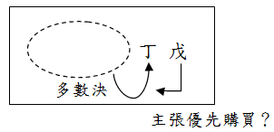
57. 農業用地之移轉限制及土地增值稅徵納(一)¶
發布日期: 2017-10-26
• (一) 農業用地之分類：
依農業發展條例第3條第10款及第11款對農業用地與耕地之定義如下：
-
農業用地：指非都市土地或都市土地農業區、保護區範圍內，依法供下列使用之土地：(1)供農作、森林、養殖、畜牧及保育使用者。(2)供與農業經營不可分離之農舍、畜禽舍、倉儲設備、曬場、集貨場、農路、灌溉、排水及其他農用之土地。(3)農民團體與合作農場所有直接供農業使用之倉庫、冷凍（藏）庫、農機中心、蠶種製造（繁殖）場、集貨場、檢驗場等用地。（農§3Ⅹ，所稱「農」，指農業發展條例，以下同）
-
耕地：指依區域計畫法劃定為特定農業區、一般農業區、山坡地保育區及森林區之農牧用地。（農§3Ⅺ）
綜上，農業用地涵括耕地，因此農業用地可分為耕地與耕地以外之農業用地二種。茲以示意圖說明如下：
[圖片1]
• (二) 耕地之移轉及土地增值稅：
人分為自然人與法人。法人又分為私法人與公法人。所稱私法人，指依私法而成立之法人。所稱公法人，指依公法而成立之法人。
-
移轉於自然人：耕地得移轉於自然人，如作農業使用並得申請不課徵土地增值稅（農§37Ⅰ）。
-
移轉於私法人：耕地不得移轉於私法人。但經中央主管機關許可，耕地得移轉於農民團體（如農會、漁會等）、農業企業機構或農業試驗研究機構（農§33）。又，作農業使用之耕地依規定移轉與農民團體、農業企業機構及農業試驗研究機構時，其符合產業發展需要、一定規模或其他條件，經直轄市、縣（市）主管機關同意者，得申請不課徵土地徵值稅（農§37Ⅱ）。
-
移轉於公法人：耕地得移轉於公法人，並應繳納土地增值稅。
• (三) 耕地以外之農業用地之移轉及土地增值稅：
-
移轉於自然人：耕地以外之農業用地得移轉於自然人，如作農業使用並得申請不課徵土地增值稅。
-
移轉於私法人：耕地以外之農業用地得移轉於私法人，並應課徵土地增值稅。
-
移轉於公法人：耕地以外之農業用地得移轉於公法人，並應課徵土地增值稅。
• (四) 舉例：下周待續...
文章圖片¶

58. 契約解除之退稅請求權¶
發布日期: 2017-11-02
各位同學好
今日專欄來談談買賣契約解除時，土地增值或契約究竟得否申請退還？
就目前稅捐機關之相關函釋予以彙整如下：
首先，解除契約應注意兩個時點之差異，一為登記完畢前，另一為登記完畢後
[圖片1]
-
尚未登記完畢買賣雙方因故解除土地移轉契約，如尚未至地政事務所辦竣土地產權登記，可向原申報稅務機關申請撤回土地增值稅申報，並退還已繳納的土地增值稅。 該退稅請求權時效，依行政程序法第131條，自該契約解除之日起算，因10年間不行使而消滅。（此處注意網路查到的資料很多說是5年的，自102年行政程序法修正後，102年後的退稅請求權時效應改為10年）
-
登記完畢後實際上，解除契約亦兩種情形：(1)雙方合意、(2)法院判決，處理有所不同：
-
雙方合意解除契約由於契約解除僅具債權效力並不生物權效力，買方取得不動產所有權的法律行為仍為有效，並不會因契約的解除而受影響，故其必須將不動產所有權再行辦理移轉登記返還予賣方，其屬另一次物權移轉行為。又因買方取得不動產所有權是為有效的，故原已繳納的土地增值稅及契稅是無法因為主張解除契約而請求退還的。 換言之，合意解除契約返還給付物，仍屬所有權移轉行為，應辦理所有權移轉登記。既然屬於土地所有權之移轉，除符合法定減免或不課徵要件者外，仍應課徵土地增值稅，且不能申請退還先前已繳納之稅款。但實際上前次移轉現值已墊高，此次可能無應納稅額。
-
法院判決確定或調解成立解除契約若法院判決確定(或法院民事調解成立)其買賣關係不存在，應持相關資料逕向地政機關辦理塗銷登記，這樣就無須再向稅捐稽徵機關申報土地增值稅。辦竣塗銷登記後，再向地方稅務局申請退還原繳納之稅款。
至於建物所有權之移轉，不涉及土地增值稅之徵免問題；惟契稅之課徵，依契稅條例第2條規定：「不動產之買賣、承典、交換、贈與、分割或因占有而取得所有權者，均應申報繳納契稅。但在開徵土地增值稅區域之土地，免徵契稅。」準此，已辦竣所有權買賣移轉登記之建物，因契約解除所為返還給付物之所有權移轉行為，非屬上述條文所訂六項契稅課稅原因之範圍者，尚無課徵契稅問題。
此外，有關已辦竣所有權移轉登記之建物，事後因雙方合意解除契約案件，應以「買賣」為登記原因，並依84年4月7日台內地字第8405408號函釋意旨於其他登記事項欄予以註記「本案為雙方合意解除契約」，使與一般買賣移轉案件有所區別。另查合意解除契約雖以買賣為登記原因，惟其成立之要件係因解除契約而返還給付物，故無須訂定公定買賣契約書，得以雙方合意解除之相關證明文件辦理所有權移轉登記。
參考資料來源：
-
土地增值稅稽徵實務 105.4.19
-
台財稅字第861927148號函釋
-
台財稅字第09504545380號
-
內授中辦地字第0940044433號函
-
內授中辦地字第0960045649號函
-
王彥琳，2014，買賣雙方合意解除契約而為返還不動產之產權登記及稅務解析
-
財政部稅務新聞：已辦竣移轉登記之土地，因解除契約返還給付物而再移轉，仍應申報移轉現值，且無法退還原繳納之土地增值稅
文章圖片¶
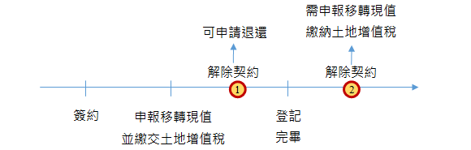
59. 農業用地之移轉限制及土地增值稅徵納(二)¶
發布日期: 2017-11-02
• (四) 舉例：
甲有二筆土地，其中一筆為森林區農牧用地(以A地表示)，另一筆為一般農業區林業用地(以B地表示)。今甲將此二筆土地出售移轉於農會，是否可行？應否課徵土地增值稅？
- A地出售移轉於農會：A地為耕地，農會屬於私法人，私法人不得承受耕地；但農會屬於農民團體，經申請許可者，得承受耕地。準此，農會經取得中央主管機關(即農業委員會)許可者，得承受A地。又，作農業使用之A地移轉於農會時，經直轄市、縣（市）主管機關同意者，得申請不課徵土地增值稅。
2. B地出售移轉於農會：B地為耕地以外之農業用地，耕地以外之農業用地的承受人無資格限制。準此，農會得承受B地。又，耕地以外之農業用地移轉於農會時，應課徵土地增值稅。¶
注：本文圖片存放於 ./images/ 目錄下
60. 土地法第13條 v.s. 優先購買權¶
發布日期: 2017-11-09
各位同學好今日專欄針對同學有詢問研究所考題：土地法第13條河川新生地鄰地所有權優先取得權與優先購買權（如土法第34-1條、第104條等）有何不同？
由於現在考試趨勢偏向應用與綜合比較題型，因而這種考題一定要多注意！茲提供思考方向，彙整如下表所示：
| 面向 | 岸地優先取得權 | 優先購買權 |
|---|---|---|
| 面向 | 岸地優先取得權 | 優先購買權 |
| 法源 | 土地法第13條 「湖澤及可通運之水道及岸地， 如因水流變遷而自然增加時，其接連地之所有權人， 有優先依法取得其所有權或使用受益之權」 |
土地法第34-1條IV、104條、 107條等（條文略） |
| 意義 | 因水流變遷自然增漲之新生地，原應屬國有， 惟基於社會經濟需要，土地經營之便利， 並避免利害關係人間因土地面積自然增加而產生爭執， 故准予接連地之所有權人有優先依法取得所有權或使用受 益之權利 |
考量共有土地簡化或消滅共有關係， 並防止共有土地落入他人之手； 以及考量建物所有權或耕地利用權與土地所有權合而為一 以盡土地經濟之效用等，賦予優先購買權 |
| 目的 | 土地規模及經濟利用 | 關係簡化或促進地用 |
| 時機 | 政府將該土地 出售出租或放墾時 | 土地出售時 |
| 性質 | 請求權有優先以代價請求承領或承購該土地之權 | 法定形成權(通說)優先購買權人向應有部分之出賣人為 優先購買之意思表事實，買賣關係旋即成立， 無須出賣人(義務人)之承諾 |
| 限制 | 該土地係屬依法不得私有者 該土地並非其接連地 該土 地並非自然增加 該土地已由他人承租承墾或依法取得使 用受益之權者 |
一經優先購買權人表示，買賣關係旋即成立， 亦即形成新的法律關係 |
| 有無先行契約 | 請求與政府締結承購或承租契約， 不需以有其他契約存在為前提 |
形成權之行使， 須以行使時所有人與第三人間有買賣契約之存在為要件 |
| 價金、給付條件等 | 雙方合意 | 與該第三人契約之同樣條件 |
| 取得類型 | 原始取得 因所增加之土地，原非任何人所私有， 乃為從新取得 |
繼受取得 仍屬一般買賣， 依據他人既有權利之讓與而取得所有權 |
參考資料：李鴻毅，1997，土地法論：69；溫豐文，2013，土地法：44。
注：本文圖片存放於 ./images/ 目錄下
61. 合建分配比之估計¶
發布日期: 2017-11-09
• (一) 估計方法：
合建權益分配之當事人為地主方與建設方。地主方提供土地，建設方投入建築。前者以比較法及土地開發分析法評估土地價格（以A表示），後者以成本法評估建築成本（以B表示），則地主方之合建分配比為[圖片1]，建設方之合建分配比為[圖片2]。
-
土地價格：以比較法估得比較價格，再以土地開發分析法估得土地開發分析價格，再就此二種價格加權平均後得到土地價格。
-
建築成本：建築成本僅計入營造施工費、規劃設計費及管理費等三項，其餘如廣告費、銷售費、稅捐、資本利息及建築利潤等不計入。不計入之理由在求兩造雙方之公平。
• (二) 估計合建分配比之影響因素：
估計合建分配比之主要影響因素如下：
-
房價：房價愈高，土地開發分析價格愈高，造成地主方之合建分配比提高。
-
容積率：容積率愈高，土地開發分析價格愈高，造成地主方之合建分配比提高。
-
營造施工費：營造施工費愈高，對地主方而言，土地開發分析價格愈低；對建設方而言，建築成本愈高，最後造成地主方之合建分配比降低。由此可知，營造施工費之變動造成雙重影響，影響甚鉅，最為關鍵。
• (三) 多數地主之合建分配比：
設建築基地由四筆土地整合而成，地主方分別為甲、乙、丙、丁，土地價格分別為A1、A2、A3、A4。四筆土地整合後之土地價格為A。另，建設方之建築成本為B。合建分配比有兩種估計方法：
第一種方法：
地主方甲之合建分配比：[圖片3]
地主方乙之合建分配比：[圖片4]
地主方丙之合建分配比：[圖片5]
地主方丁之合建分配比：[圖片6]
建設方之合建分配比：[圖片7]
第二種方法：
地主方甲之合建分配比：[圖片8]
其中：[圖片9]
地主方乙之合建分配比：[圖片10]
其中：[圖片11]
地主方丙之合建分配比：[圖片12]
其中：[圖片13]
地主方丁之合建分配比：[圖片14]
其中：[圖片15]
又，[圖片16]
建設方之合建分配比：[圖片17]
綜上，第一種方法，土地整合利益由建設方享有，故對建設方有利，但對地主方不利；第二種方法，土地整合利益由地主方享有，故對地主方有利，但對建設方不利。
例如：某建設公司擬在一塊建築基地進行合建，這塊建築基地由A、B、C三筆土地構成，地主分別為甲、乙、丙。經評估結果A地總價為2,000萬元，B地總價為3,000萬元，C地總價為4,000萬元，三筆土地合併後評估總價為10,000萬元。另，經評估建設公司投入建築成本為5,000萬元，則其合建分配比如下：
第一種方法：
| 地主方或建設方 | 提供土地價格或投入建築成本（萬元） | 合建分配比（%） |
|---|---|---|
| 地主方或建設方 | 提供土地價格或投入建築成本（萬元） | 合建分配比（%） |
| 甲 | 2,000 | 14.29 |
| 乙 | 3,000 | 21.43 |
| 丙 | 4,000 | 28.57 |
| 建設公司 | 5,000 | 35.71 |
| 合計 | 14,000 | 100 |
第二種方法：
| 地主方或建設方 | 提供土地價格或投入建築成本（萬元） | 調整後提供土地價格或投入建築成本（萬元） | 合建分配比（%） |
|---|---|---|---|
| 地主方或建設方 | 提供土地價格或投入建築成本（萬元） | 調整後提供土地價格或投入建築成本（萬元） | 合建分配比（%） |
| 甲 | 2,000 | [圖片18] | 14.81 |
| 乙 | 3,000 | [圖片19] | 22.22 |
| 丙 | 4,000 | [圖片20] | 29.63 |
| 建設公司 | 5,000 | 5,000 | 33.34 |
| 合計 | 14,000 | 15,000 | 100 |
文章圖片¶


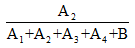


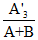
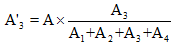

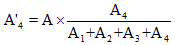

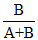
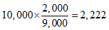
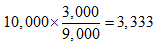

注：本文圖片存放於 ./images/ 目錄下
62. 信託之地價稅¶
發布日期: 2017-11-16
各位同學好
剛好有幾位同學都問到103年經紀人其中一題有關信託土地之地價稅課徵方式，今日專欄統一說明：
首先，103年經紀人土法土稅第12題：某甲擁有A、B兩筆住宅區土地，A地當年度課徵地價稅之申報地價為5,000元/m2，面積100m2，B地當年度課徵地價稅之申報地價為2,000元/m2，面積200m2，某甲將B地信託與某乙，某乙名下無任何土地，某甲享有全部信託利益，信託10年，目前尚有3年信託期滿，若A、B兩筆土地均在同一縣市，該縣市當年度累進起點地價為100萬元，若某甲當年度未申請A、B兩地為自用住宅用地，則某甲當年度應繳地價稅為：(A)5,000元 (B)9,000元 (C)4,000元 (D)3,000元
[圖片1]
• 一、信託納稅義務人
土地稅法第3條之1：土地為信託財產者，於信託關係存續中，以受託人為地價稅之納稅義務人。
甲（委託人）將B地信託給乙（受託人），乙即為地價稅之納稅義務人。
• 二、稅基＝申報地價總額之計算方式
土地稅法第3條之1：信託土地應與委託人在同一直轄市或縣(市)轄區內所有之土地合併計算地價總額，依第十六條規定稅率課徵地價稅，分別就各該土地地價占地價總額之比例，計算其應納之地價稅。但信託利益之受益人為非委託人且符合左列各款規定者，前項土地應與受益人在同一直轄市或縣(市)轄區內所有之土地合併計算地價總額：1.受益人已確定並享有全部信託利益者。2.委託人未保留變更受益人之權利者。
立法意旨：避免納稅義務人為逃避適用累進稅率，故意將土地信託出去。因此，如果屬於自益信託，土地最終歸屬委託人自己，即視為該土地之實質所有權人還是委託人自己，該信託出去的土地就要跟委託人土地併計，該累進就累進，算完委託人應徵稅額後，再透過土地申報地價之比分算給受託人繳。然而，如果該信託屬於他益信託，此時實質所有權人為受益人，且委託人沒有變更權利，即受益人是明確的，故就要跟受益人所有土地合併計算申報地價總額。
• 三、應徵稅額
信託土地分成兩種情形：
• (一) 自益信託
本題因某甲享有全部信託利益故屬自益信託，此時甲為實質所有權人，故該信託土地仍要與甲所有土地合併計算申報地價總額：
• A. 地＝0.5萬/m2×100m2＝50萬元
• B. 地＝0.2萬/m2×200m2＝40萬元
甲應徵稅額＝A+B地＝90萬元，因未超過該縣市當年度累進起點地價為100萬元，故以基本稅率10‰計算＝90萬元×10‰＝9,000元
甲為A地納稅義務人，其應繳稅額＝9,000元×50/90＝5,000元
乙為B地納稅義務人，其應繳稅額＝9,000元×40/90＝4,000元
因此，本題答案為(A)。
• (二) 他益信託
假設本案例為他益信託，受益人為丙，且甲未保留變更受益人丙之權利，此時，B地就要跟丙之所有財產合計。茲舉例如下圖所示：
[圖片2]
• A. 地＝0.5萬/m2×100m2＝50萬元
• B. 地＝0.2萬/m2×200m2＝40萬元
• C. 地＝0.3萬/m2×300m2＝90萬元
甲為A地納稅義務人，因未超過該縣市當年度累進起點地價為100萬元，故以基本稅率10‰計算＝50萬元×10‰＝5,000元
丙應徵稅額＝B+C地＝130萬元，因超過該縣市當年度累進起點地價100萬元，未達五倍，故以稅率15‰計算＝100萬元×10‰＋30萬元×15‰＝14,500元（速算＝130萬元×15‰－100萬元×0.005）
乙為B地納稅義務人，其應繳稅額＝14,500元×40/130＝4,462元
丙為C地納稅義務人，其應繳稅額＝14,500元×90/130＝10,038元
文章圖片¶


63. 106不動產經紀人考前必讀¶
發布日期: 2017-11-16
依「房屋租賃定型化契約應記載及不得記載事項」之規定，承租人有何種情形之一者，出租人得終止租約？出租人有何種情形之一者，承租人得終止租約？不得記載事項有哪些？
【解答】
• (一) 承租人有下列情形之一者，出租人得終止租約：
-
遲付租金之總額達二個月之金額，並經出租人定相當期限催告，承租人仍不為支付。
-
未經出租人同意，變更用途或將房屋之全部或一部轉租出借或以其他方式供他人使用，或將租賃權轉讓於他人。
-
未經出租人同意，自行改裝房屋設施。
• (二) 出租人有下列情形之一者，承租人得終止租約：
-
房屋損害而有修繕之必要時，其應由出租人負責修繕者，經承租人定相當期限催告，仍未修繕完畢。
-
因不可歸責於承租人之事由，致房屋之一部減失者，承租人得按減失之部分，請求減少租金。減少租金無法議定，或房屋存於部分不能達租賃之目的。
-
房屋有危及承租人或其同居人之安全或健康之瑕疵時。
• (三) 房屋租賃定型化契約不得記載事項：
-
不得約定拋棄審閱期間。
-
不得約定廣告僅供參考。
-
不得約定承租人不得申報租賃費用支出。
-
不得約定承租人不得遷入戶籍。
-
不得約定應由出租人負擔之稅賦，若較出租前增加時，其增加部分由承租人負擔。
-
出租人故意不告知承租人房屋有瑕疵者，不得約定排除民法上瑕疵擔保責任。
-
不得約定承租人須繳回契約書。
8. 不得約定違反法律上強制或禁止規定。¶
注：本文圖片存放於 ./images/ 目錄下
64. 全國國土計畫之分類¶
發布日期: 2017-11-23
各位同學好
恰好這週都市計畫技師剛考完，其中一題問到目前全國國土計畫（草案）之各國土功能分區及分類之劃設原則，接下來要考地方特考的同學也應特別注意，今天專欄幫各位簡單彙整一下各分類重點，以利同學記憶：
| 分區分類草案 | 摘要 |
|---|---|
| 分區分類草案 | |
| 國土保育地區 | 第1類 |
| 第2類 | 多為區域計畫第2級環境敏感地區 |
| 第3類 | 國家公園地區 |
| 第4類 | 都市計畫保護區 |
| 海洋資源地區 | 第1類-1 |
| 第1類-2 | 使用性質具排他性之地區 |
| 第2類 | 使用性質具相容性之地區 |
| 第3類 | 其他尚未規劃或使用之海域 |
| 農業發展地區 | 第1類 |
| 第2類 | 良好農地（農地資源分級分類第二、三種） |
| 第3類 | 山坡地農地（農地資源分級分類第四種） |
| 第4類 | 農村聚落（區計及原住民之鄉村區） |
| 第5類 | 都市計畫農業區 |
| 城鄉發展地區 | 第1類 |
| 第2類-1 | 依區域計畫法劃定之鄉村區、工業區 |
| 第2類-2 | 核發開發許可地區 |
| 第2類-3 | 重大建設或城鄉發展需求者 |
| 第3類 | 原住民保留地之鄉村區 |
注：本文圖片存放於 ./images/ 目錄下
65. 參加市地重劃分回土地面積與參加區段徵收分回土地面積之比較¶
發布日期: 2017-11-23
土地所有權人參加市地重劃分回土地面積之計算方法詳如市地重劃實施辦法第29條附件。土地所有權人參加區段徵收分回土地面積之計算方法詳如土地徵收條例施行細則第50條附件。二者之公式頗為複雜，常困擾學生，因此筆者將其公式簡化，以利學習。
• (一) 市地重劃：參加市地重劃，原所有權人應負擔之項目，包括臨街地特別負擔、一般負擔及費用負擔等三項。實施市地重劃時，原所有權人應分配面積之計算方法簡化如下：
-
重劃前後宗地地價上漲率(A)=[圖片1]
-
重劃區一般負擔係數(B)=[圖片2]
-
重劃區費用負擔係數(C)=[圖片3]
-
各宗土地重劃後應分配之面積(D)=[重劃前原有之宗地面積×[圖片4]－臨街地特別負擔]×[圖片5]
• (二) 區段徵收：土地徵收條例第44條第1項第1款規定，被徵收土地所有權人領回抵價地之面積，由該管直轄市或縣（市）主管機關按其應領地價補償費與區段徵收補償地價總額之比率計算其應領之權利價值，並以實際領回抵價地之單位地價折算之。準此，實施區段徵收時，假定區段徵收範圍內無農地重劃區，原所有權人領回抵價地面積之計算方法簡化如下：
-
全區預計抵價地面積=全區之徵收土地總面積×抵價地比例（40%~50%）
-
預計抵價地總地價=Σ規劃供抵價地分配之各分配街廓面積×各該分配街廓評定之單位地價
-
區內各原土地所有權人領回抵價地之權利價值=[圖片6]
-
各原土地所有權人領回抵價地之面積=[圖片7]
• (三) 比較：
-
市地重劃分配土地之概念，係先就重劃全區面積扣除公共設施用地負擔與費用負擔後，再按地價比例分配給各原所有權人；因此，市地重劃屬於政府與地主共同開發土地，地主分擔公共設施用地及重劃費用，並分享開發利益。區段徵收分配土地之概念，係先就徵收全區土地乘以抵價地比例，再按徵收補償地價比例分配給各原所有權人；因此，區段徵收一方面地主失去土地，另一方面地主分享土地開發與地目變更之利益。
-
市地重劃分回土地之計算公式較合理。區段徵收分回土地之計算公式中，有關抵價地比例(現行規定40%~50%)欠缺理論根據，失之武斷。
-
市地重劃分回土地最少55%，區段徵收分回土地最少40%，最多50%。故市地重劃分回土地較多，區段徵收分回土地較少。
-
實施市地重劃，地主分回土地只享有土地開發之漲價利益，未享有地目變更之漲價利益。實施區段徵收，地主分回土地享有土地開發與地目變更之雙重漲價利益。
-
市地重劃分回土地較多，但開發後土地漲價較少，漲價主要來自於土地改良，故較無暴利存在。區段徵收分回土地較少，但開發後土地漲價較多，常有暴利存在；暴利主要來自於地目變更，因而滋生官商勾結、炒作土地。
文章圖片¶


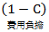
66. 國土計畫之違規處罰¶
發布日期: 2017-11-30
各位同學好
有關都市計畫與區域計畫如違反所訂之土地使用管制，其處罰為6~30萬元罰鍰、限期變更、停止或恢復原狀，甚至斷水斷電、強制拆除，甚而6個月以下刑責。
未來國土計畫法通過後，非常強調各國土功能分區及分類之計畫指導性，因而其罰則也因應是否符合各分區及分類使用原則，以及使用項目的外部影響程度，處罰（罰鍰）程度由重至輕如下：
• 一、最重＝100~500萬（違反國土空間指導）
未符合國土功能分區及其分類使用原則＋從事一定規模以上或性質特殊之土地使用。例如：在農業發展地區第一類不得作工廠使用，故違反國土功能分區及其分類使用原則。此外，該工廠使用之規模達到國土法24所訂的規模認定標準的話，應申請使用許可，以確認其對於周邊環境之相容性與外部影響程度，假設訂為1公頃。因此，榮耀哥今天在農發1購買一宗1.5公頃之土地興建廠房，則將處100~500萬之罰鍰。
• 二、中間＝30~150萬（具一定外部影響）（符合國土功能分區及其分類使用原則）
-
未許可卻從事一定規模以上或性質特殊之土地使用
-
未依該許可進行使用（使用地類別、使用配置、項目、強度）
例如：在農業發展地區第一類得作農產品銷售設施，如農產品批發零售站，但假設未來國土法第24條訂定如農業儲銷使用達2公頃，須申請使用許可。因此，榮耀哥今天在農發1購買一宗2.5公頃土地興建農產品批發零售站及相關設施，則將處30~150萬之罰鍰。
• 三、最輕＝6~30萬元（違反使用項目及強度等）（符合國土功能分區及其分類使用原則）（未達一定規模且非性質特殊）
違反國土計畫土地使用管制。例如：在農業發展地區第二類下編定有農業用地、農業設施用地、公用事業用地等，其中假設農業用地未來可作農作使用、水產養殖等（專供農業生產使用），但不能作農業設施使用，如水產食品加工場所及設施，這些設施要作應該要編為農業設施用地才能作（目的是保護農地完整性）。因此，榮耀哥今天在農發2購買一宗0.5公頃之農業用地，做水產食品加工場所及設施（該0.5公頃規模未達須申請使用許可之門檻），即處6~30萬之罰鍰。¶
注：本文圖片存放於 ./images/ 目錄下
67. 土地增值稅重購退稅額度與房地合一所得稅重購退稅額度之比較¶
發布日期: 2017-11-30
• (一) 土地增值稅之重購退稅額度如下：
-
新購土地地價＞(原出售土地地價—土地增值稅)：退還不足支付新購土地地價，但以已納土地增值稅為限。
-
新購土地地價≦(原出售土地地價—土地增值稅)：不得退稅。
• (二) 房地合一所得稅之重購退稅額度如下：
-
重購價額≧出售價額：退還全部稅額。
-
重購價額＜出售價額：按下列公式計算，退還部分稅額。[圖片1]
• (三) 比較：
-
土地增值稅重購退稅之適用對象包括自用住宅用地、自營工廠用地及自耕農業用地等三種。房地合一所得稅重購退稅之適用對象限於自住房地。
-
土地增值稅之重購退稅以土地價格計算，房地合一所得稅之重購退稅以房地價格計算。
-
土地增值稅重購退稅之計算，以該次移轉時之土地申報移轉現值為準。房地合一所得稅重購退稅之計算，以交易時之成交價格為準。
-
土地增值稅之重購價格過低，不得退稅。房地合一所得稅之重購價格不論高或低，皆可退稅。
-
土地增值稅按重購價格與原出售價格之「差額」予以退稅；但原出售價格須再扣除已繳之土地增值稅。房地合一所得稅按重購價額與原出售價額之「比率」予以退稅；但原出售價格不必再扣除已繳之房地合一所得稅。
文章圖片¶

68. 土地法第34條之1修正¶
發布日期: 2017-12-07
各位同學好
這週地特考試將近，先預祝各位考生考運亨通~另12/1土地法第34條之1執行要點業經內政部修正發布，雖然地特考題應早已出完，不會特別出修正地方，但如有考到相關內容，則仍然可以提到本次修正內容。因此，本次專欄茲幫大家整理重點如下：
第三點（重大修正→注意不包含事實上處分行為；另信託與分割之理由跟講義相同，講義更完整，請參「土地法講義」第一回，曾榮耀，2017）本法條第一項所定處分，以有償讓與為限，不包括信託行為及共有物分割；所定變更，以有償或不影響不同意共有人之利益為限；所定設定地上權、農育權、不動產役權或典權，以有償為限。
修正理由：本法條之規定，係以限制少數共有人所有權之方式，以增進公共利益，故為符合憲法保障財產權之意旨，該法條之適用範圍應限縮於可兼顧不同意少數共有人之利益之情形，並對之應有合理性之補償。準此，無償性之處分與無償性設定上開物權，對於不同意共有人之所有權造成過大侵害，故不在適用之列。基於相同理由，變更亦以有償或不影響不同意共有人之利益為限，例如共有土地或建物標示之分割、合併。至於事實上之處分行為，恆使共有不動產歸於消滅，且以無償為常，對不同意之共有人無補償之道，亦不包含之。無償性之處分行為、事實上處分行為及共有不動產涉及性質之變更，影響不同意共有人之利益，且無補償之道，應作不包括之限制解釋。
第七點（重大修正→原本得以一般通知書為之，修正為以雙掛號通知）(二)書面通知應視實際情形，以雙掛號之通知書或郵局存證信函為之。
第八點（重大修正→多數決除列明、記明、證明與無須簽名外，應檢附已為通知或公告之文件＝土登考題，要注意！）本法條第一項共有人會同權利人申請權利變更登記時，登記申請書及契約書內，應列明全體共有人及其繼承人，並檢附已為通知或公告之文件，於登記申請書適當欄記明依土地法第三十四條之一第一項至第三項規定辦理，如有不實，義務人願負法律責任；登記機關無須審查其通知或公告之內容。未能會同申請之他共有人，無須於契約書及申請書上簽名，亦無須親自到場核對身分。如因而取得不動產物權者，本法條第一項共有人應代他共有人申請登記。
修正理由：對於他共有人之通知或公告，乃係部分共有人得依多數決處分之法定先行程序，部分共有人是否履行其應盡之通知義務，對他共有人之權益影響甚鉅，是登記機關宜確認部分共有人已踐行該義務，爰修正第一款規定，申請人應檢附其通知或公告文件，惟對於該等通知或公告文件之內容，涉及處分方式、價金分配、償付方法及期限等，尚非登記機關可審認，故無須審查。
第九點（重大修正→提存得由其中一人或數人辦理提存）(一)提存人應為本法條第一項之共有人，並得由其中一人或數人辦理提存。
修正理由：因連帶債務人中之一人為清償、提存等而債務消滅者，他債務人亦同免其責任。故共有人辦理提存時，不論以本法條第一項之同意處分之共有人全體或部分為提存人，均已達對價清償之目的。
第十點（重大修正→直接規定多數決處分整筆地時，其他不同意共有人得主張優先購買整筆土地；另於第十一點配合刪除多數決處分應先「通知」是否願意購買之規定）部分共有人依本法條第一項規定出賣共有土地或建物時，他共有人得以出賣之同一條件共同或單獨優先購買。
修正理由：
-
基於本法條施行以來，部分共有人以極不相當之對價將共有土地全部出賣予第三人，形成他共有人權利遭排擠之弊端，考量倘不允許他共有人以同一價格優先購買，將有悖社會公平原則。
-
部分共有人依本法條第一項規定出賣全部共有土地或建物時，乃出賣共有物全部之所有權，亦即為各共有人應有部分之總和，故為平衡當事人之利益及保障他共有人之權益，他共有人對共有土地全部應享有優先購買權（其他理由請詳參「土地法講義」第一回，曾榮耀，2017）
-
本法條第一項規定出賣全部共有土地之情形，「應在程序上先就其應有部分通知他共有人是否願意優先購買」，始得出賣，增加本法條第一項所無之限制，且對於該項關於多數共有人處分全部共有物之權限規定，旨在保護多數共有人之利益及促進共有土地或建築改良物之有效利用之立法目的，與同法條第四項，各共有人處分其應有部分時，應優先保護共有人利益之立法目的，有所混淆，使本法條第一項之立法目的難於實現，故原第一款後段之規定應不予適用。
第十一點（重大修正→優先購買權表示期間由10日延長為15日→要注意！！！）(一)他共有人於接到出賣通知後十五日內不表示者，其優先購買權視為放棄。他共有人以書面為優先購買與否之表示者，以該表示之通知達到同意處分之共有人時發生效力。
修正理由：為維護少數共有人權益，本法條事前程序之保障應有更嚴謹之規定，爰參酌民法物權編施行法第八條之五第七項規定，將現行規定第二款規定他共有人應於接獲出賣通知後表示優先購買之一定期間由十日延長修正為十五日，並刪除「徵求他共有人是否優先承購之手續，準用土地法第一百零四條第二項規定」文字。
請參考：修正土地法34-1執行要點及對照表¶
注：本文圖片存放於 ./images/ 目錄下
69. 106年地方特考「土地經濟學」之評析¶
發布日期: 2017-12-14
今年題目與往年相同，非常靈活。土地經濟學這科拿高分的要訣，就是須理解每一個圖形的內涵、表達意念及劃法。
第一題：因為題目出現財產權配置，故應用寇斯定理之圖形。
第二題：因為題目有地力差額地租及集約度差額地租，故應用李嘉圖差額地租理論之圖形。
第三題：因為題目有農地利用度，故應用生產要素市場之決策圖形。
第四題：因為題目有土地交易稅轉嫁，故應用供需彈性大小對租稅轉嫁的影響之圖形。
詳細解答請參考：高點高上公職106年地方特考解答
順便一提，我的土地經濟學課程於後天（12月16日）早上09:30開課，本課程全部用經濟圖形講解，專門提供給想拿高分的同學，歡迎試聽。¶
注：本文圖片存放於 ./images/ 目錄下
70. 土地法第104條實例解析¶
發布日期: 2017-12-21
各位同學好
因有許多同學詢問104年普考的一題土地法實例如何回答，本週專欄統一予以說明，提供同學參考：
[考題]
甲、乙、丙三人分別共有基地一筆，應有部分均等且三人定有分管契約，茲甲將其應有（特定）部分土地（下稱系爭土地）設定典權予丁，丁未建屋旋即出租予戊，戊依法於其上建有建物一棟（下稱系爭建物）。試依據土地法第104條相關規定，回答下述問題：(一)甲於典權與租賃存續期間擬出售系爭土地予第三人時，乙、丁與戊均欲行使先買權，誰之先買權優先？理由為何？(二)戊於典權與租賃存續期間擬出售系爭建物予第三人時，甲、丙與丁均欲行使先買權，誰之先買權優先？理由為何？
[圖片1]
[曾榮耀老師擬答]
-
確認各關係人：甲、乙、丙分別為共有人；丁為典權人；戊為典物承租人及建物所有權人。(根據民法§915典權存續中，典權人得將典物轉典或出租於他人)
-
今甲於典權與租賃存續期間擬出售系爭土地予第三人時，認為應以戊之優先購買權為最優先，乙次之：(1)乙為共有人，其優先購買權權源為土§34-1，根據土§34-1第四項…，效力屬於債權效力。(2)丁為典權人，其優先購買似有所疑義，可從兩個面向討論：
-
從文義上解釋，其優先購買權權源為土§104，根據土§104…，因具有土地利用之考量，屬於物權效力。而當物權與債權之優先購買權競合時，以物權優先，故丁應優先於乙。
-
然而，從目的上而言，依70年台上字第4312號、86年台上字第1251號基地承租人或地上權人，如於基地上根本未為房屋之建築者，當無該條規定之適用，係因土§104之意旨在於基地與其上使用之房屋能同屬一所有權人，而丁並非該建物之所有權人，應無適用之餘地。
• (3) 戊應為土§104之優先適用對象，可從兩個面向討論：
-
以文義解釋，根據土§104所適用之優先購買權人為地上權人、典權人及承租人，而該承租人從文義似限縮為租用基地建築房屋之承租人。此外，基地所有權人甲與基地上建物所有權人戊，兩者間並無直接租賃關係，以此為解釋則戊無優先購買權。
-
然而，由目的而言，戊應可適用土§104，係該規定旨在確保房地一體化，促進土地利用，而典權人轉租後由戊興建建物並擁有所有權，符合該立法意旨，俾使基地與其地上之房屋合歸一人所有，土地之利用與所有權併於同一主體，充分發揮土地之利用價值，並杜當事人間之紛爭而有保障之必要。因此，優先購買權之順序，不宜單以登記先後定之，似應依基地上之房屋所有權之歸屬為妥，而認為戊方為土§104之優先適用對象。
• (二) 戊於典權與租賃存續期間擬出售系爭建物予第三人時，甲之優先購買權為最優先行使，丙與丁則無法主張，其理由如下：
-
甲於共有分管之土地上設定典權，並由戊最終興建房屋，成為房屋所有權人，故基於土§104房屋與基地所有權人合一之立法精神，戊出售時，當以分管土地之所有權人甲具有優先購買權，方符合土地與建物利用及其所有權同為一人之要旨。
-
丙為共有人之一，其優先購買權權源包括土§34-1IV及土§104，前者係共有人出賣其應有部分之優先購買權，於本題情況不符，故無法適用；後者則因甲、乙、丙之共有土地業經分管協議，故各自對特定分管土地具使用收益之權，而戊之典權並非存在於丙之分管土地上，與房地所有權及利用同屬一人以促進地用之要旨不符，故亦無法主張土§104之優先購買權。
-
丁為甲特定分管土地之典權人，非土§104所適用之基地所有權人，故亦無法主張土§104之優先購買權。
文章圖片¶
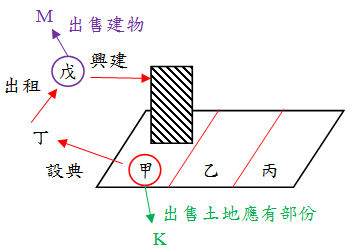
71. 優先購買權通知之回復期限¶
發布日期: 2017-12-21
民國106年12月1日修正「土地法第三十四條之一執行要點」，其中一項修正：「他共有人於接到出賣通知後十五日內不表示者，其優先購買權視為放棄。」原修文之回復期限為十日，現修正為十五日。茲將其他優先購買權之回復期限整理如下：
| 優先購買權 | 回復期限 |
|---|---|
| 優先購買權 | 回復期限 |
| 土地法第34條之1第4項 | 15日 |
| 土地法第104條 | 10日 |
| 土地法第107條 | 10日 |
| 耕地三七五減租條例第15條 | 15日 |
| 民法第426條之2 | 10日 |
| 民法第460條之1 | 10日 |
| 民法第919條 | 10日 |
| 民法物權編施行法第8條之5第3項及第5項 | 15日 |
注：本文圖片存放於 ./images/ 目錄下
72. 優先購買權是否得預先拋棄？¶
發布日期: 2017-12-26
各位同學好
即將邁入2018年，先祝各位新年快樂，未來一年考運亨通~
今日專欄討論優先購買權是否得預先拋棄？
其分別就土34-1共有，土104基地、土107耕地來作說明：
優先購買權是否得預先拋棄？『106高考題相關』
| 共有(V) |
|---|
| 共有(V) |
| 基地(V) |
| 耕地(X) |
總而言之，其思考原則就是，優先購買權是一種權利，而權利是法律賦予個人享受特定利益的力量，原則上得為拋棄，除非例外情形，為保護權利者個人利益或社會公益，法律設有權利不得事先拋棄的規定，例如民法規定權利能力、自由時效利益等不得預先拋棄。因此，優先購買權原則上都可以拋棄。
而為何耕地之優先購買權特別例外？係某項特定權利得否拋棄，除法律明定者外，法院尚應斟酌立法目的，依解釋方法，予以認定。耕地三七五減租條例規定承租人優先承買權，立法意旨既然本於憲法扶植自耕農的基本國策，而解釋法律原應貫徹憲法價值判斷，故為保護承租人的權利，解釋上此項優先承買權不得事先拋棄，似較妥適。
注：本文圖片存放於 ./images/ 目錄下
73. 優先購買權之放棄與視為放棄¶
發布日期: 2017-12-28
優先購買權人不願依同樣條件優先承受者，其方式有放棄優先購買權與視為放棄優先購買權二種。
• (一) 放棄優先購買權：指優先購買權人於接到出賣通知後於期限內表示不願意承受，或優先購買權人擅自變更買賣條件後表示願意承受。優先購買權之放棄，如為物權性質之優先購買權，應檢附優先購買權人放棄優先購買權之證明文件。
• (二) 視為放棄優先購買權：指優先購買權人於接到出賣通知後於期限於未表示承受與否。優先購買權之視為放棄，如為物權性質之優先購買權，應檢附出賣人已通知優先購買權人之證件並切結優先購買權人接到出賣通知後逾期不表示優先購買，如有不實，願負法律責任字樣。
順便一提的是，債權性質之優先購買權，不論放棄或視為放棄，檢附之文件皆為出賣人之切結書，或於登記申請書適當欄記明優先購買權人確已放棄其優先購買權，如有不實，出賣人願負法律責任字樣。¶
注：本文圖片存放於 ./images/ 目錄下